La Matière
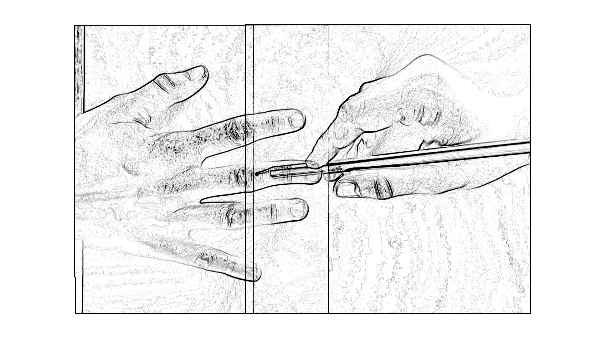
matter
du mater
bois dur
dont la lance perce la racine
La matière demeurera plate dans la paume.
Le récit de l’écriture est celui d’une invention (Mésopotamie au IVe avant J.-C.) pour des raisons de comptabilité. L’inscription (et par extension la littérature) naîtrait de l’inventaire.
compter les vaches sur l'agora
dans la paume de la main
puis retravailler l'argile
compter les vaches sur l'agora
peut-être ajouter un détail au hasard
modeler la répétition des modelages
finir par décrire
par pétrir la littérature
Il s’avère cependant, comme développé par Silvia Ferrera dans La fabuleuse histoire de l’invention de l’écriture ( Citation: 2021 Ferrara, S. (2021). La fabuleuse histoire de l’invention de l’écriture. Éditions du Seuil. ) , que l’écriture n’a pas été inventée à des fins comptables, qu’elle n’a pas été inventée à un endroit, et qu’elle n’a peut-être même pas été inventée.
Allora perché nasce la scrittura? la scrittura non nasce per uno scopo specifico. ( Citation: Ferrara & , 2021 Ferrara, S. & (2021). L’invention de l’écriture. Retrieved from https://lamanufacturedidees.org/2021/07/01/entre-les-lignes/ )
Alors pourquoi apparaît l’écriture ? L’écriture ne naît pas dans un but précis. (traduction personnelle)
Émergeant a minima dans quatre endroits principaux du globe (Égypte et Mésopotamie au IVe avant J.-C., Chine à la fin du IIe siècle avant J.-C., Mexique), pour des pratiques culturelles différentes (de divination, d’oraison funéraire, d’administration, de loisir), l’écriture tient de la coïncidence. Le problème de spéculation occidentale sur l’écriture n’émane pas seulement d’un désir d’excellence, il se fonde sur le fait que la part aveugle de l’archéologie sémiotique, les non-trouvailles et ce qui n’apparaît pas, n’impacte pas la primauté d’une culture et d’une civilisation. Loin d’être « la première technologie de l’intelligence » ( Citation: Klock-Fontanille, 2010 Klock-Fontanille, I. (2010). Des supports pour écrire d’Uruk à Internet. Le français aujourd'hui, 170(3). 13–30. https://doi.org/10.3917/lfa.170.0013 ) – position goodyenne qui est à l’extrême opposé de l’écriture qui ici tente de déconstruire l’a priori anthropocentré des sciences humaines – l’écriture est une circonstance des agencements matériels concrets. Elle est en ce sens contextuelle à une culture de l’inscription qui n’est pas neutre et qui appréhende le rapport à la matière d’une certaine façon. Parler de cette matière, des agencements qui sont dans le creux des signes tracés, par les mêmes mots qu’elle impacte, apparaît comme une torsion de l’esprit.
la matière n'est pas une chose,
elle n'est pas le bois dur ni la lance,
elle est le mouvement de percée
Parce qu’elle est une dynamique et non un objet, une allée et non une impasse, la matière sera traitée ici en marge des argumentations exclusivement rationnelles, dans une valse qui est celle d’images poétiques. Si tenté tant est que l’épaisseur matérielle d’une écriture puisse transparaître en mirage du présent support de restitution, elle est par défaut et par avance déjà aplatie par le principe même d’inscription et par le fonctionnement essentialisant du discours. Corps étendu sous le rouleau-compresseur du discours, l’écriture jouera tout de même le jeu de prétendre pouvoir extraire sa propre tessiture par des tricheries visuelles, embrassement graphique du texte et de l’image
(
Citation: Mellet, 2023
Mellet,
M.
(2023).
« Mais étaient-ce des signes ? ».
Revue Fémur, 7. Retrieved from
https://revuefemur.com/index.php/2023/06/10/mais-etaient-ce-des-signes-les-embrassements-graphiques-du-texte-et-de-limage/
)
, par le déploiement d’une pensée de la littérature comme un art plastique, par la déclinaison de faits d’écritures qui relèvent de la matérialité du fait littéraire.
la plume que Gustave taillait lui-même
la flamme des chandelles qui ont ôté la vue à Honoré
le gueuloir où résonnait la voix d'Émile le laissant savoir s'il est sur la bonne voix
la chambre à soi à quatre murs de Virginia
le bureau envahi des carnets de François
La question peut alors être posée, et a d’ailleurs été posée à mon encontre1 : où arrêter la matérialité de l’écriture ?
la tranche de la page,
les bords de ma machine,
la porte de l'atelier d'écriture,
l'espace que je loue, le trottoir qui borde,
les câbles, serveurs, infrastructures numériques,
l'eau, le ciel, la terre dans lesquels s'enfoncent les fils d'écriture
Il faut bien circonscrire, donner une limite, une frontière – pour qu’éventuellement une autre écriture puisse remettre en question ces frontières, démontrer leur coercitive partialité, étendre le paysage. Les balises de la matière seront celles de l’appréhension des gestes d’intervention, juste au bord de la falaise de l’intentionnalité d’écriture. Dans cette circonscription, la matière est moins abordée comme une chose, un fait, que comme implications (mattering) soit en termes de relation et de composition des rapports.
Matières à écrire #
écritures
rayures
coupes
creux
Dès ses premières formes, l’écriture est cette entaille dans le réel – de la pierre, du bois, de la cire, et de la terre – mais ne peut se résumer à l’unique lecture qui est faite de cette entaille.
Écrire –
L’encrier, cristal comme une conscience, avec sa goutte, au fond, de ténèbres relative à ce que quelque chose soit : puis, écarte la lampe.
Tu remarquas, on n’écrit pas, lumineusement, sur champ obscur, l’alphabet des astres, seul, ainsi s’indique, ébauché ou interrompu ; l’homme poursuit noir sur blanc.
Ce pli de sombre dentelle, qui retient l’infini, tissé par mille, chacun selon le fil ou prolongement ignoré son secret, assemble des entrelacs distants où dort un luxe à inventorier, stryge, nœud, feuillages et présenter.
Avec le rien de mystère, indispensable, qui demeure, exprimé, quelque peu. ( Citation: Mallarmé, 2010 Mallarmé, S. (2010). Divagations. publie.net. )
Dans un texte intitulé « L’Action restreinte », Mallarmé résume beaucoup du geste d’écriture en ne parlant pas de l’humain, de l’auteur en terme d’aura ou de génie, mais en donnant la parole et la scène aux divers objets et éléments qui composent la création. La densité du discours mallarméen retranscrit une impossibilité du dire, un achoppement où l’humain n’est plus véritablement le moteur de l’écriture, ce sont désormais les actes qui viennent le mettre en mouvement, qui prennent le cap de la syntaxe poétique. La culture de l’écriture de Mallarmé est celle où Dieu est mort, où le mal est au jardin d’Éden, dans les pétales des plus belles fleurs, et où l’humain n’est plus au centre de sa propre réalité même lorsqu’il pense ou prétend écrire. Épiphanie terre-à-terre, l’écriture est une mise en place, une circonstance spatiale et temporelle que le geste de tenue de l’outil ne peut complètement enceindre. C’est pourquoi, dans les lignes qui suivent, poursuite du noir sur blanc, il a été tenté de laisser parler les différentes chairs du geste d’écriture.
La plume qui était marteau #
Dans la série de ses réflexions sur les littératures numériques, François Bon fait le récit d’une anecdote flaubertienne qui, en plus de préciser un rapport à l’écriture par un travail concret de l’environnement ne s’arrêtant ni à la page si au geste d’inscription, est tout particulièrement éloquente pour le sujet la matérialité des outils d’écriture ( Citation: 2021 (N.A.). (2021). Flaubert écrivain technologique | les numériques #11. Retrieved from https://www.youtube.com/watch?v=uE-5kEjaCDM ) : Flaubert taillait lui-même ses plumes d’écritures.
avant que de se mettre à l'ouvrage
façonner l'outil, l'amont de l'écriture
qu'il devienne lui-même une pointe de cet ouvrage
Lors d’un voyage en Méditerranée, il s’était chargé d’une boîte remplie de plumes d’oie. Vantant la solution de la plume de fer – n’impliquant pas le taillage préalable – Maxime Du Camps, alors son compagnon de voyage, se moqua de ce qu’il considéra comme un caprice d’auteur. Avec virulence, Flaubert justifia sa préférence.
rituel pré-écriture
le geste d'inscription début avant la page
on esquisse d'abord la tête de la trace
Aux yeux de Flaubert, les plumes en fer relèvent de la mécanique – perspective qui reprend l’opposition surannée entre technique et nature – rompant la transmission de l’âme à la page par la main. Qu’il s’agisse d’une conviction spirituelle ou un goût pour le traditionnel ou l’artisanal d’une manière de faire, le choix de la plume d’oie incarne une réalité du travail d’écriture qui ne peut être résumée aux seuls gestes et environnements d’écriture. Il ne s’agissait peut-être ni d’une préférence de prise en main, de toucher (puisque les plumes de fer en tant que corps froids devaient présenter une meilleure adhérence à la peau), ni une préférence de coût d’achat, ou même de résistance (les plumes de fer présentaient davantage de résistance et la possibilité d’une réutilisation), mais davantage d’une méthode de création. En plus du travail (pourtant conséquent comme le montrent les archives de cet auteur) de collecte, de documentation, d’indexation des informations nécessaires à la bonne restitution d’une époque, d’un sujet, d’une réalité culturelle, l’activité d’écriture commence pour Flaubert dans un temps de soin de la matière à écrire qui demande autant d’attention, de minutie et de technique que l’étape encyclopédique2.
objet coupant, bougie, plume
à la bougie, chauffe le calamus
en tenant les rachis et barbes hors de la flamme
gratte la surface de la plume sans la griffer
coupe droit en deux entailles
du tronc à la pointe
fend de l'extérieur à l'intérieur dans un des creux
tourne l'oiseau
coupe droit en deux entailles
ôte la partie sèche du calamus
Temps de préparation de l’écriture, et donc de l’âme autant que de la main, la plume d’oie flaubertienne est la préférence d’une étape de préparation concrète qui n’apparaît plus sous le même angle avec la mécanisation des outils d’écriture qui, s’ils présentent des avantages à plusieurs égards, dépossèdent d’une composition de l’écriture avant le geste : faire émerger la plume d’écriture de phanères de gros volatiles, tailler la forme d’une inscription selon la préférence du tracé. Ces gestes d’écriture sont une prise en compte des conditions même de la transmission (que cette dernière se fasse de l’âme à la page ou différemment).
Cependant, la réaction de Du Camps n’est pas sans intérêt : en effet, pourquoi s’embarrasser d’un lot de plumes ? d’une série de gestes à la bougie ?
qu'est-ce que ça change au fond du blanc ?
plume de fer, d'oie, ou d'or
peut-on juger un poème au poids de sa plume ?
le style en sera-t-il moins aiguisé si la pointe est émoussée ?
Autrement posée par Bon, la question est ainsi formulée :
Est-ce-que l’objet technique modifie le récit ? ( Citation: N.A., 2022 (N.A.). (2022). #numériques | littérature & intelligence artificielle, la bagarre a commencé !. Retrieved from https://www.youtube.com/watch?v=_SpaaaD0Ssg )
À Bon, certainement Nietzsche aurait répondu :
Unser Schreibwerzeug schreibt mit an unseren Gedanken. (Lettre à Heinrich Köselitz, fin février 1882 in ( Citation: Montinari, 1975, p. 172 Montinari, M. (1975). Nietzsche Briefwechsel. Kritische Gesamtausgabe. Nietzsche-Studien, 3(1). https://doi.org/10.1515/9783110244243.374 ) )
que DeepL aurait traduit ainsi :
Our writing tools write with us on our thoughts. (traduction de DeepL)
ou encore :
Notre outil d’écriture écrit avec/sur nos pensées. (traduction de DeepL)
Énoncée en de nombreux lieux, en de nombreux temps et par de nombreuses voix, l’affirmation de Nietzsche répondant à Bon avec une centaine d’années de décalage ne faisait pas tant référence à la machine qu’il utilisait (la « délicate » boule de Hansen) qu’aux conditions d’écriture de manière générale : la prise de conscience nietzschéenne sur la détermination de l’écriture arrive paradoxalement au moment où sa myopie devient trop gênante pour lui permettre de voir avec clarté son écriture. Ce statement que n’aura pas plus approfondi Nietzsche révèle déjà de la part de l’auteur un échec vis-à-vis de la matière : son écriture n’est pas le fait unique de son esprit, sous ses yeux dont les orbites se embrument progressivement de myopie, l’écriture est également le fait de ce qui lui échappe. Elle commence avant ce que l’on estime être la première inscription :
Let us start with an example. In front of me, in the dim light, lies this white paper. I see it, I touch it. This perceptual seeing and touching of the paper …, precisely with this relative lack of clearness, with this imperfect definition, appearing to me from this particular angle - is a cogitatio, a conscious experience. ( Citation: Husserl, 2014, p. 65 Husserl, E. (2014). Ideas for a Pure Phenomenology and Phenomenological Philosophy. First book: General Introduction to Pure Phenomenology. Hackett Publishing Company. )
Un exemple pour commencer : devant moi, dans la pénombre, une page blanche gît. Je la vois, je la touche. Ces perceptions de la page, la vue et le toucher …, justement dans cette clarté restreinte, dans l’imprécision des limites, m’apparaissent sous cet angle particulier – c’est une cogitatio, une expérience consciente. (traduction personnelle)
Sans que l’exclusivité humaine sur l’écriture soit totalement abandonnée – il s’agit toujours pour l’homme d’imposer sa pensée dans le support comme il planterait une graine – il demeure le constat que l’écriture, la création, la littérature ne se réduisent pas à la seule présence d’un individu devant une page : l’artefact technologique manque à la réflexion de Husserl, mais les conditions matérielles (mattering) transparaissent déjà un peu entre les corps ( Citation: 2014, p. 53 Husserl, E. (2014). Ideas for a Pure Phenomenology and Phenomenological Philosophy. First book: General Introduction to Pure Phenomenology. Hackett Publishing Company. ) .
L’écriture rassemble une série de réalités, habitus, ou rencontres à la limite de la romance en clair-obscur dont les configurations font déjà partie du travail de rédaction, déterminent déjà la formation des signes. Le passage de Heidegger est notamment analysé dans la déclinaison des éléments du contexte d’écriture :
[I]t could, with Heidegger, have been a hammer, or, with Sartre, a glass of beer or a Chesnut tree (Heidegger 2005, 107-14; Sartre 2008, 20-6, 180-92) ( Citation: Smith, 2018, p. 37 Smith, D. (2018). Exceptional technologies: a continental philosophy of technology. Bloomsbury Academic. )
Il aurait pu être, pour Heidegger, un marteau, ou pour Sartre, un verre de bière ou châtaignier. (traduction personnelle)
Il, le contexte d’écriture, aurait pu en être en effet autrement.
un crucifix plutôt qu'un marteau
un verre de javel
une nature morte
un chat noir
Au-delà des formes et des compositions, l’impact des conditions matérielles d’écriture serait demeuré déterminant dans l’expérience de cogitatio, mais l’on se doute que l’effet de conscience de l’expérience varie de saveurs selon que l’on ait à côté de sa page un cigare, un pistolet ou la photographie d’un être chair cher ou selon que l’on écrit sur un clavier, une feuille ou une secrétaire.
Ainsi Dromio, l’esclave, à son maître Antipholus d’Ephèse dans The Comedy of Errors : « If the skin were parchment and the blows you gave the ink…» (III, 1, 13). Shakespeare indiquait de la sorte le lieu premier de l’écriture et le rapport de maîtrise que la loi entretient avec son sujet par le geste de « lui faire la peau ». ( Citation: Certeau & Certeau, 2010, p. 207 Certeau, M. & Certeau, M. (2010). Arts de faire (Nouvelle éd). Gallimard. )
L’outil ne modifie par le récit en terme d’intentionnalité, il ne va pas d’un cutter tailler des bouts narratifs à la lueur d’une chandelle : il l’a déjà modifié avant même l’expression de notre soi-disant intentionnalité.
si la plume eût été de fer ou de plomb
tout le destin d'Emma Bovary aurait été différent
Que l’on nomme cette part aveugle « Dieu » ou « Diable », fabrique, média, machine ou matière, quelque chose se passe au-delà de notre volonté. Le transfert de l’âme que Flaubert entrevoit dans le maniement de la plume d’oie déguise dans le manteau d’une croyance une réalité qui n’en est pas moins physique : la composition des rapports entre moi en statut d’écrivant et l’espace d’enregistrement de cette volonté n’est pas la même que je tienne un objet froid, sorti directement d’une mallette, ou un corps chauffé par mes doigts, dont je connais les détails et les reliefs pour avoir pris le temps de les travailler. Cette réflexion, des plumes aux claviers, relève de la même épiphanique épaisseur de l’écriture que les discours à la Du Camps qui distinguent le travail de l’outil d’écriture avec l’activité d’écriture et les imaginaires sacralisant l’écriture (par l’intention, le génie et l’abstraction), l’enterrent dans l’onde.
Les strates de l’onde #
peut-être qu'à ma retraite, j'aurai du temps pour m'occuper de choses aussi bizarres que le numérique
moi, la technologie je m'en sers, je ne m'en occupe pas
ça s'allume dans la page
tant que ça marche, moi tu sais
on a été sauvé par zoom
tu devrais écrire plutôt que de bricoler
Entendu au travers de différentes bouches, le rejet de la matière n’est pas seulement l’expression de fantasmes et de rêves d’immortels, mais bien une résistance aux réalités du fait littéraire. Rhétorique ou tradition, l’abstraction participe certainement à faire que les sciences humaines, des sciences « molles », soient impossibles à saisir tant elles coulent entre les doigts, sans robustesse ni résistance.
génie d'ivoire
instrument en main et en plein pouvoir
esprit fertile et vif de jets d'écriture
tour solitaire sans voisinage et insonorisée
frottements intellectuels et autres branlages d'outils
frénésie de la rédaction qui s'échauffe en pensant aux Muses
production des prochaines générations de l'espèce
Dans l’édification des catégories flottantes, l’imaginaire joue, comme une main avec des fils, à mimer des figures qui masquent la paume et les doigts manipulant l’attention. Par abus de langage ou simples analogies, par l’aveu même de discours quand ils se mirent dans les miroirs, la matérialité des écritures numériques et plus largement des architectures numériques s’est défaite, a sombré dans un enfer non-mécanique des fluides. Ce glissement culturel est celui que revendique la main de Ted Nelson dans l’eau de l’hypertexte, qui sera plus tard appelé le paperkiller.
d'un lac
d'un bain
d'un verre
d'un souvenir
Dans un entretien avec le réalisateur Werner Herzog (Lo and Behold, 2016), Nelson raconte comment il en est arrivé à formuler le principe de l’hypertexte : selon ses dires, ce n’est pas en relisant les croisements textuels de Genette, les extensions mémorielles de Bush (avec le Memory Extender ou Memex) ou en étudiant les systèmes d’indexation et de classement pré-numériques (des bibliothèques au IIIe siècle d’Alexandrie jusqu’aux encyclopédies savantes du XVIIIe). Le moment conté par Nelson, en proie certainement à la mythification d’un moment, est un Dasein, une expérience du monde qu’il présente comme triviale, élémentaire autant que profonde et symbolique.
It was an experience of water and interconnection. I was with my grandparents in a rowboat in Chicago so I must have been five years old and I was trailing my hand in the water and I thought about how the water was moving around my fingers opening on one side and closing on the other and that changing system of relationships where everything was kind of the similar, kind of the same and yet different. That was so difficult to visualize and express and just generalizing that to the entire universe that the world is a system of ever-changing relationships and structures struck me as a vast truth. Which it is! And so interconnection and expressiong that interconnection has bee the center of all my thinking and all my computer work has been about expressing and representing and showing interconnection among writings especially. And writing is the process of reducing a tapestry of interconnection to a narrow sequence. (Lo and Behold, 2016)
Ce fut une expérience de l’eau et de l’interconnexion. J’étais avec mes grands-parents à bord d’une barque à Chicago, je devais avoir cinq ans, je traînais ma main dans l’eau et je pensais à la façon dont l’eau se déplaçait autour de mes doigts, s’ouvrant d’un côté et se refermant de l’autre, et à ce système changeant de relations où tout était à la fois similaire, identique et pourtant différent. C’était si difficile à visualiser et à exprimer, et le fait de généraliser cela à l’univers entier, à savoir que le monde est un système de relations et de structures en constante évolution, m’a semblé être une vaste vérité. Et c’est le cas ! Ainsi, l’interconnexion et l’expression de cette interconnexion ont été au centre de toute ma réflexion et de tout mon travail informatique, qui consistait à exprimer, à représenter et à montrer l’interconnexion entre les écrits en particulier. Et l’écriture est le processus de réduction d’une tapisserie d’interconnexion à une séquence limitée, ce qui, au sens où on l’entend, est une compression abusive de ce qui devrait s’étendre. (traduction personnelle)
Aplatie, réduite, l’écriture est une compression de sa propre réalité relationnelle, venant même réduire en réalité et essentialiser une conception moderne de l’hypertexte qui ne peut résumer à une balade en barque (même à Chicago).
et si Nelson avait contemplé ses veines plutôt que l'eau ?
et si Nelson n'avait pas fait de bateau ?
et si il avait fait naufrage dans la page de Mallarmé ?
S’il s’agissait à l’origine de relation plutôt que des caractéristiques naturelles de l’élément, ce qui s’est ancré dans les imaginaires est l’idée de liquidité qui sépare le corps du message, dépèce un discours de ce qui le fait s’incarner. Les réalités relationnelles changeantes de l’écriture numérique lorsque approchées par les discours et les images ont été dissipées dans quelques brouillards rêveurs, la matérialité de l’inscription et du geste d’inscriptions tassées. Autour de la liquidité a fleuri le lexique commun de la culture numérique au point de devenir iconique (Brown 1989) soit de faire écran à la compréhension des rapports entre les éléments.
navigateurs à la conquête de l'iceberg
surf sur la toile et ses soies
ancres pour raccrocher le texte à une balise
flux et contre-flux, streaming en flots
phishing ou hameçonnages de gros poissons
pirates à l'arrière-plan armés de verrous
feuilles de styles en cascade
crawling dans les bas fonds
« Machine théorique » ( Citation: Galison, 2003, p. 227 Galison, P. (2003). Einstein’s Clocks and Poincaré’s Maps: Empires of Time (1st ed). W.W. Norton. ) qui désignait au départ l’étonnante dynamique modulaire des environnements numériques, la métaphore de la fluidité a dérivé vers une conception sibylline : éther, cloud, nuage, lointain.
Nous devenons ainsi les agents d’un texte que nous ne saisissons pas dans son incarnation, les passagers d’une barque au nocher dont nous n’assimilons pas l’étrange technicité. ( Citation: Mellet, 2024 Mellet, M. (2024). L’image organique du texte numérique. In La pensée de l'organe.. Presses universitaires de l'Université de Laval. )
Ce nocher, figure du paradoxe de l’aveuglement littéraire face à son propre reflet, est pourtant une matière bien lettrée. Les environnements numériques ont ceci de littéraire, ou de radicalement littéraire, qu’ils sont structurés sur de l’écriture : lieu du scriptural, le numérique n’en est pas moins un déplacement culturel fort au vu de l’écriture (de ce que nous en appréhendons) et du geste d’inscription (de comment nous pensons qu’il s’active dans le réel). Le régime d’écriture dans la culture numérique explose dans la notion de calculable :
L’informatique, comme son nom l’indique, est de l’information automatique ; plus précisément, elle est la technoscience du traitement de l’information par des machines automatiques. Et toute programmation informatique suppose une discrétisation et une formalisation, en un mot une écriture. ( Citation: Petit & Bouchardon, 2017, p. 136 Petit, V. & Bouchardon, S. (2017). L’écriture numérique ou l’écriture selon les machines. Enjeux philosophiques et pédagogiques. Communication & langages, 191(1). 129–148. https://doi.org/10.3917/comla.191.0129 )
Le terme de discrétisation est en fait un fil rouge permettant autant de comprendre une continuité entre les supports et les systèmes d’écriture, que le bassin à l’origine de son épaisseur. Les machines modernes d’écriture ne sont pas tant des machines fondées sur l’idée d’une écriture comme linéarité – les machines n’écrivent pas à écrire comme les enfants à l’école – qu’un principe de discrétisation.
Le nouveau paradigme du calculable de l’écriture est habituellement schématisé par l’idée de strates, niveau ou couches organisées par étapes dans le face à face entre machine et humain.
- le niveau des unités formelles privées de sens (0 et 1), soit le codage binaire qui est l’écriture par la machine (niveau 1) ;
- le niveau du logiciel, celui de la manifestation, des formats et des fonctions d’écritures, soit l’écriture pour la machine (niveau 2) ;
- le niveau des utilisateurs/utilisatrices, de l’interaction, soit l’écriture avec la machine (niveau 3).
Que l’on prenne comme image celle de l’oignon, du derme ou du palimpseste ( Citation: Battles, 2016 Battles, M. (2016). Palimpsest: A History of the Written Word. W. W. Norton & Company. ) , il s’agit d’illustrer la stratification des traces de l’écriture et les dynamiques de recouvrements produisant des effets balancés entre opacité et transparence. Dans cette trilogie des strates, le premier niveau est appréhendé comme le niveau le plus technique laissant le dernier niveau, le niveau des utilisateurs/utilisatrices, seul lisible/visible. En plus d’une certaine tendance à organiser le monde en couple d’opposés ou en composition de trouple, l’utilisation même du principe de niveau insinue qu’il y a coupure entre les écritures et potentielle indépendance. Architecture qui prend en compte les réalités relationnelles, elle met pourtant à plat les dynamiques synergiques, changeantes, organiques de l’écriture numérique. Les différents régimes d’écriture alignés ci-dessus existent dans un système de relation les uns vis-à-vis des autres. Opacités, transparences et recouvrements opérant entre strates, l’écriture numérique imite une forme graphique, « simulacre du graphique » par Herrenschmidt ( Citation: 2007 Herrenschmidt, C. (2007). Les trois écritures: Langue, nombre, code. Gallimard. ) , tout en relevant d’une structure tout à fait différente.
Dans cette expérimentation des strates, niveaux de l’écriture où descendre comme dans une cave, la création Mines à Mues appréhende le texte comme partiellement manquant à la lisibilité directe. Tout ne pas se lire au premier niveau.
Dans un espace divisé en cinq cadres qui retranscrivent autant la structuration classique d’une page (en-tête, marges de chaque côté du corps du texte et pied de page), le poème est marqué de signes manquants (dont n’est visible qu’une trace apparente). C’est le curseur qui en passant sur les absentes va permettre de les révéler sous la forme d’un alphabet retravaillé par le figuratif (le C est une demi-lune, le U est un verre d’eau, le A une double échelle, le G un escargot, le O une maison) ou par l’entaille de la trace (le R, le M, le I). Par son parcours, le curseur redevient un outil de lecture du lettre à lettre dont le visuel dépend de la lettre encodée dans le niveau plus profond.
Cependant, au-delà du jeu entre lisible et caché que propose Mines à Mues, l’inspection du code source de la page permet de recouvrir une lecture plus « continue » (bien qu’entrecoupée des balises HTML qui structurent le texte).
Au-delà des retranscriptions schématiques qui comme des arbres procurent contemplations et plongées du regard, qu’en est-il de que devient physiquement et concrètement l’écriture ? La distinction habituelle des niveaux de l’écriture numérique étire les principes de continuum entre les Verstraete faires des strates, en distinguant une première d’une dernière, et aplanit un rapport de composition d’épaisseur. Au-delà de la structure palimpsestique d’un nouveau paradigme de l’écriture, et d’une certaine beauté du mille-feuille servi par les théories, la réalité d’une écriture numérique est également électrique.
Juste sous la pointe #
vrombissement
chauffe
souffle
tourne
ronronnement
vibre
frémit
frissonne
Nos écritures tournent, tournent toujours plus vite au sein d’un petit boîtier où rien se touche.
Depuis l’un de ses premiers représentants (IBM en 1956, poids d’une tonne), le disque dur a évolué pour devenir une technologie rapide, fiable et à la capacité de stockage croissante qui devient, à partir du milieu des années 1980, le premier media pour stocker l’écriture dans l’ordinateur personnel. Si aujourd’hui la technologie SSD (Static Solid Drive) représente une alternative plus rapide (les capacités multitâches étant augmentées) et plus résistante, il reste que le principe d’inscription est équivalent ou très proche entre les deux systèmes.
The hard drive and magnetic media more generally are mechanism of extreme inscription – that is, they offer a practical limit case for how the inscriptive act can be imagined and executed. To examine the hard drive at this level is to enter a looking glass world where the Kantian manifold of space and time is measured in millionths of a meter (called microns) and thousandths of a second (milliseconds), a world of leading-edge engineering rooted in the ancient science of tribology, the study of interacting surfaces in relative motion. ( Citation: Kirschenbaum, 2016, p. 176 Kirschenbaum, M. (2016). Extreme Inscription: A Grammatology of the Hard Drive. In New Media, Old Media: A History and Theory Reader. (Second edition). Routledge. )
Le disque dur et les supports magnétiques en général sont des mécanismes d’inscription extrême - c’est-à-dire qu’ils offrent un cas limite pratique pour imaginer et exécuter l’acte d’inscription. Examiner le disque dur à ce niveau, c’est entrer dans un monde en miroir où le manifeste kantien de l’espace et du temps se mesure en millionièmes de mètre (appelés microns) et en millièmes de seconde (millisecondes), un monde d’ingénierie de pointe enraciné dans la science ancienne de la tribologie, l’étude des surfaces en interaction dans un mouvement relatif. (traduction personnelle)
Objet d’apparence abscons pour les sciences humaines, boîte décrétée noire pleine d’a priori et de démons, le disque dur est pourtant « central to any narrative of computing and inscription », mais reste peu étudié dans les approches des nouveaux médias à l’exception des recherches menées par Kirschenbaum ( Citation: 2016, p. 178 Kirschenbaum, M. (2016). Extreme Inscription: A Grammatology of the Hard Drive. In New Media, Old Media: A History and Theory Reader. (Second edition). Routledge. ) .
aveu d'une simplification ici
vulgarisation technique
semée de grains mesmériques
approche molle du disque dur
Mécanisme d’inscription extrême, le dispositif d’écriture numérique est un construit d’aimants et de dipôles, un empilement de disques en aluminium ou plus récemment en verre, recouvert d’une fine couche de matériaux magnétiques (des nanomètres) au-dessus desquels se balance une épée de Damoclès : des têtes de lecture qui survolent la surface des disques, mais qui ne doivent pas entrer en contact direct. Des deux faces exploitées des disques magnétiques, rosaces de nos informations encodées, aucune n’est jamais frottée, touchée, atteinte directement comme le précise Kirschenbaum ( Citation: 2016, p. 180 Kirschenbaum, M. (2016). Extreme Inscription: A Grammatology of the Hard Drive. In New Media, Old Media: A History and Theory Reader. (Second edition). Routledge. ) . Les pointes des stylets se tiennent toujours à distance des pages, n’effleurant pas, planant juste au-dessus des paysages qui défilent.
ce n'est pas un palimpseste
il n'y a jamais eu de première inscription
rien ne gratte ou ne ponce
relation et contact du minuscule
Alternance de 0 et 1, les bits de nos informations sont un ensemble de grains (dont le nombre se réduit au fil des avancées technologiques passant de 10 000 grains pour un bit à 10 aujourd’hui) semés sur une table tournante que ni la machine ni les mains ne touche.
sur la table de divination
tout vibre, lévite un peu
roulement à la surface
de l'électricité dans l'air passe
les poussières sur la table semblent se mouvoir selon une organisation particulière
donnant à voir des continuités dans le séquencement
Les disques tournent sous les mains, tournent toujours plus vite.
Par principe de magnétorésistance, variation de la résistance électrique avec le champ magnétique, les têtes de lecture chargées électricité activent la surface égrainée par magnétisme en reportant des charges positives ou négatives (1 ou 0) au bon secteur du disque. L’épaisseur est un survol de relations qui s’impactent sans se pénétrer. Si contact trop direct il y avait, l’écriture serait détruite, la surface trouée. Comme dans la rêverie de Rilke qui imagine la pointe du phonographe déraper pour lire la surface d’un crâne, suivre la suture coronale et prononcer un texte qui n’a jamais été écrit.
What if one changed the needle and directed it on its return journey along a tracing which was not derived from the graphic translation of sound, but existed of itself naturally-well, to put it plainly, along the coronal suture, for example. What would happen? A sound would necessarily result, a series of sounds, music… ( Citation: , 1919 (1919). Primal Sound. Juan Andrés M. Fuentes. Retrieved from http://archive.org/details/rilkeprimalsound )
Que se passerait-il si l’on changeait l’aiguille et qu’on la dirigeait sur son retour le long d’un tracé qui n’est pas dérivé de la traduction graphique du son, mais qui existe de lui-même naturellement – en clair, le long de la suture coronale, par exemple. Que se passerait-il ? Il en résulterait forcément un son, une série de sons, de la musique… (traduction personnelle)
Dans le magnétisme technologique, l’écriture ne serait plus un rapport dans ou sur, mais un rapport vers :
We write on paper, but we write to a magnetic disk (or tape). ( Citation: Kirschenbaum, 2016, p. 182 Kirschenbaum, M. (2016). Extreme Inscription: A Grammatology of the Hard Drive. In New Media, Old Media: A History and Theory Reader. (Second edition). Routledge. )
Nous écrivons sur du papier, mais nous écrivons vers un disque magnétique (ou une bande). (traduction personnelle)
La réalité du geste d’inscription est déplacée, retournée, littéralement et dans les mouvements de l’écriture – qui tourne et survole, tourne et survole toujours plus vite – l’humain est soustrait de l’équation, il n’apparaît à aucune des strates.
Digital inscription is a form of displacement. Its fundamental characteristic is to remove digital objects from the channels of direct human intervention. This is reflected in even the most casual language we use to relate the inscription process. ( Citation: Kirschenbaum, 2016, p. 182 Kirschenbaum, M. (2016). Extreme Inscription: A Grammatology of the Hard Drive. In New Media, Old Media: A History and Theory Reader. (Second edition). Routledge. )
L’inscription numérique est une forme de déplacement/décalage. Sa caractéristique fondamentale est de soustraire les objets numériques aux canaux d’intervention humaine directe. Cela se reflète même dans le langage le plus familier que nous utilisons pour décrire le processus d’inscription. (traduction personnelle)
Non-inscription ? Le fait que le contact ne nous paraisse pas direct, que le paradigme classique de l’inscription soit perturbé, que l’écriture ne procède plus de l’imposition directe d’un signe comme pour le papier n’indique par l’immatérialité d’une trace : elle est le signe que le principe même d’inscription n’est pas univoque ou plat.
Une empreinte n’a pas toujours la forme même du corps qui l’a imprimée et elle ne naît pas toujours de la pression d’un corps. Elle reproduit parfois l’impression qu’un corps a laissée dans notre esprit, elle est empreinte d’une idée. L’idée est signe des choses, et l’image est signe de l’idée, signe d’un signe. Mais à partir de l’image, je reconstruis, sinon le corps, l’idée que d’autres en avaient." ( Citation: Eco, 2022 Eco, U. (2022). Le nom de la rose (Nouvelle éd. augmentée des dessins et notes préparatoires de l'auteur). Bernard Grasset. )
Placée certes à une échelle plus petite, soustraite peut-être à l’œil nu, l’inscription numérique n’implique en effet plus le même mouvement dans nos imaginaires et les perceptions de nos entendements et se différencie d’une écriture sur le papier, comme une écriture sur le papier se distinguent d’une gravure sur bois et pourraient (parce qu’elles n’entaillent pas à proprement parler) paraître comme des survols. Pour lutter contre l’obscurantisme du disque dur, Kirschenbaum en propose une grammatologie :
Here is my list: it is random access; it is a signal processor; it is differential (and chronographic); it is volumetric; it is rationalized (and atomized); it is motion-dependent; it is planographic; and it is non-volatile (but also variable). ( Citation: Kirschenbaum, 2016, p. 183 Kirschenbaum, M. (2016). Extreme Inscription: A Grammatology of the Hard Drive. In New Media, Old Media: A History and Theory Reader. (Second edition). Routledge. )
Voici ma liste : c’est un accès aléatoire ; c’est un traitement de signaux ; c’est différentiel (et chronographique) ; c’est volumétrique ; c’est rationalisé (et atomisé) ; c’est dépendant du mouvement ; c’est planographique ; et c’est non-volatile (mais aussi variable). (traduction personnelle)
Inscrite malgré tout dans une histoire des surfaces matérielles, l’écriture numérique est dite planographique dans la mesure où la surface du disque est idéalement lisse à la différence des procédés en creux ou en relief (comme la gravure sur bois) qui vont travailler la profondeur et la hauteur pour transférer une surface sur une autre par des sillons.
écrire sans chenal
écrire sur le plat
sans ligne
par un souffle subtil d'aspérités
Ce que précise Kirschenbaum est que la surface planographique ne sera jamais absolument lisse, toujours un peu marquée par des imperfections, traces d’interventions mais qu’elle demeure « by far the most exquisitely realized planographic surface in the history of writing and inscription, with tolerances measured at the nanoscale » ( Citation: Kirschenbaum, 2016, p. 186 Kirschenbaum, M. (2016). Extreme Inscription: A Grammatology of the Hard Drive. In New Media, Old Media: A History and Theory Reader. (Second edition). Routledge. ) / « de loin la surface planographique la plus délicatement réalisée dans l’histoire de l’écriture et de l’inscription, avec des tolérances mesurées à l’échelle du nanomètre » (traduction personnelle). La presque planitude du support implique également un changement de paradigme quant à l’effacement des écritures :
“Deleting” a file does not actually remove it from the disk, even after one empties the socalled Recycle Bin. Instead, in keeping with the volumetric nature of disk storage, the delete command simply tells the FAT [File Allocation Table] to make the clusters associated with the given file available again for future use–a special hex character (E5h) is affied to the beginning of the file name, but the data itself stays intact on the platter. File recovery utilities work by removing the special character and restoring files to the FAT as allocated clusters […] The key point here is the master role played by the FAT, itself a purely grammatological construct, in legislating the writing space of the drive. ( Citation: Kirschenbaum, 2016, p. 185 Kirschenbaum, M. (2016). Extreme Inscription: A Grammatology of the Hard Drive. In New Media, Old Media: A History and Theory Reader. (Second edition). Routledge. )
L’effacement d’un fichier ne le supprime pas réellement du disque, même après avoir vidé la « corbeille ». Au lieu de cela, conformément à la nature volumétrique du stockage sur disque, la commande de suppression indique simplement à la FAT [File Allocation Table / Table d’allocation des fichiers] de rendre les clusters associés au fichier donné à nouveau disponibles pour une utilisation future - un caractère hexadécimal spécial (E5h) est ajouté au début du nom du fichier, mais les données elles-mêmes restent intactes sur le plateau. Les utilitaires de récupération de fichiers suppriment le caractère spécial et restaurent les fichiers dans la FAT en tant que clusters alloués […] Le point essentiel ici est le rôle majeur joué par la FAT, qui est elle-même une construction purement grammaticale, pour légiférer sur l’espace d’écriture du disque. (traduction personnelle)
Organe précieux du corps de la machine, le disque dur n’est pas manipulé hors de pièces blanches immaculées, désinfectées, des lieux à part du vivant, à l’abri des regards, des aspérités extérieures :
The drive resides within the machine’s external case and is further isolated inside of a sealed chamber to keep out dust, hair, and other contaminants. When a drive is opened for repair or data recovery the work is done in a clean room, similar to those to print microprocessors. Most users will never see their hard drive during the life of their computer. As a writing instrument it thus remains an abstraction – presented as a pie chart to show disk space remaining – or else apprehended through aural rather than visual cues (the drive is audible as it spins up or down). ( Citation: Kirschenbaum, 2016, p. 178 Kirschenbaum, M. (2016). Extreme Inscription: A Grammatology of the Hard Drive. In New Media, Old Media: A History and Theory Reader. (Second edition). Routledge. )
Le disque se trouve dans le boîtier externe de la machine et est isolé à l’intérieur d’une chambre scellée pour empêcher que des poussières, des poils et d’autres contaminants n’y pénètrent. Lorsqu’un disque est ouvert en vue d’une réparation ou d’une récupération de données, le travail est effectué dans une salle blanche, semblable à celles utilisées pour imprimer les microprocesseurs. La plupart des utilisateurs ne verront jamais leur disque dur tout au long de la durée de vie de leur ordinateur. En tant qu’instrument d’écriture, il reste donc une abstraction - présenté sous la forme d’un diagramme circulaire indiquant l’espace disque restant - ou appréhendé par des indices sonores plutôt que visuels (le disque est audible lorsqu’il tourne vers le haut ou vers le bas). (traduction personnelle)
Quasi bactérienne, l’écriture est alors affaire de manipulations précises, risquées et jamais ne sera vue, nue dans toute sa matérialité, par l’écrivant (« physically sequestered from any direct observation » ( Citation: Kirschenbaum, 2016, p. 178 Kirschenbaum, M. (2016). Extreme Inscription: A Grammatology of the Hard Drive. In New Media, Old Media: A History and Theory Reader. (Second edition). Routledge. ) / « physiquement isolé de toute observation directe »).
dans un laboratoire, sous les spots de lumières platine,
avec des outils de chirurgiens, d'inspecteurs de surface, de sage-femme, de petites mains
une écriture est opérée, greffée, soignée, remédiée
Cette réserve de l’écriture alimente l’imaginaire du génie dans la lampe, de l’oracle dans la machine, soit d’un être qui échappe à nos entendements. Une désécriture de l’écriture.
Pour les yeux qui auront vu l’écriture nue-numérique numérique nue, ce que le réel vient dissoudre dans une réalité mécanique peut se révéler décevant. Cité par Kirschenbaum
(
Citation: 2016, p. 182
Kirschenbaum,
M.
(2016).
Extreme Inscription: A Grammatology of the Hard Drive. In
New Media, Old Media: A History and Theory Reader. (Second edition).
Routledge.
)
, le cas de William Gibson, un des auteurs américains qui a établi le mouvement du cyberpunk, illustre la déception de la réalité d’une inscription qui ne déroge pas à la réalité. Pas de quartz brillant dans l’air à la Dark Crystal (Henson et Oz, 1982), pas de créature lovecraftienne aux multiples tentacules, juste une aiguille empressée dans la course sur une piste ronde : « it made computers less sexy »
(
Citation: 2016, p. 182
Kirschenbaum,
M.
(2016).
Extreme Inscription: A Grammatology of the Hard Drive. In
New Media, Old Media: A History and Theory Reader. (Second edition).
Routledge.
)
. La monotonie que peut représenter un système de stylets survolant les paysages au regard des imaginatives inventions futuristes doit être en partie responsable des rêves d’abstractions et de mystères qui filent toujours plus la métaphore d’une écriture inatteignable.
Not knowing exactly what happens to our data or how to properly articulate our relationship to it once it scrolls off the edge of the screen is a minor but perceptible trope in writing on new media. ( Citation: Kirschenbaum, 2016, p. 182 Kirschenbaum, M. (2016). Extreme Inscription: A Grammatology of the Hard Drive. In New Media, Old Media: A History and Theory Reader. (Second edition). Routledge. )
Ne pas savoir exactement ce qu’il advient de nos données ou comment articuler correctement notre relation avec ces dernières une fois qu’elles ont disparu du cadre de l’écran est un trope mineur et pourtant perceptible dans l’écriture sur les nouveaux médias. (traduction personnelle)
Ce trope mineur, qui vient d’un trop technique pour les a priori de l’association écriture/inscription, est justement ce que l’on peut retrouver dans la pensée derridienne ( Citation: Derrida, 2005, pp. 19-23 Derrida, J. (2005). Paper Machine (1st edition). Stanford University Press. ) qui distingue les outils de la culture papier (stylos, machines à écrire) de ceux de la culture numérique.
tant que ça marche
tant que ça marche
tant que ça marche
« [S]ecret with no mystery » ( Citation: Kirschenbaum, 2016, p. 182183 Kirschenbaum, M. (2016). Extreme Inscription: A Grammatology of the Hard Drive. In New Media, Old Media: A History and Theory Reader. (Second edition). Routledge. ) est ce qui marque notre relation aux environnements numériques d’écriture sans intimité, soit sans connaissance de ce qu’il se passe « on with them, in them, on their side » ( Citation: 2016, pp. 182-183 Kirschenbaum, M. (2016). Extreme Inscription: A Grammatology of the Hard Drive. In New Media, Old Media: A History and Theory Reader. (Second edition). Routledge. )
Since hard disks in most users’ experience either work flawlessly or else crash spectacularly, the notion of device as a binary black box with no capacity for error short of global failure is perhaps inevitable. These functional extremes are precisely what reinforce the dominant perception of immateriality. ( Citation: Kirschenbaum, 2016, p. 178 Kirschenbaum, M. (2016). Extreme Inscription: A Grammatology of the Hard Drive. In New Media, Old Media: A History and Theory Reader. (Second edition). Routledge. )
Dans la mesure où, selon l’expérience de la plupart des utilisateurs, les disques durs fonctionnent parfaitement ou tombent en panne de manière spectaculaire, la notion d’appareil comme boîte noire binaire n’ayant aucune capacité d’erreur, à l’exception d’une panne globale, est probablement inévitable. Ces fonctions extrêmes sont précisément ce qui renforce la perception dominante de l’immatérialité. (traduction personnelle)
Cette reconfiguration de l’écriture par la culture numérique n’implique donc pas seulement un déplacement des catégories (lisible/visible, humain/non-humain, spécialiste/amateur) qui avait déjà avancée par plusieurs mouvements littéraires avant-gardistes (avec le jeu des conventions éditoriales, typographiques et de mises en page), elle impacte directement le geste d’écriture et configurations matérielles dans lesquelles ce geste s’opère.
L’autre écrit #
faire du texte un autre
le faire porter par l'altérité
le rendre étranger à l'humain
Déplacement radical du geste d’inscription et du support de narration, la création bioartistique du Xenotext de Christian Bök ( Citation: 2015 Bök, C. (2015). The xenotext. Book 1. Coach House Books. ) est le projet de l’encodage d’un texte au sein d’un organisme vivant pour voir se répercuter les effets de l’inscription au travers du temps :
The Xenotext is my nine years long attempt to create an example of “living poetry”. I have been striving to write a short verse about language and genetics, whereupon I use a “chemical alphabet” to translate this poem into a sequence of DNA for subsequent implantation into the genome of a bacterium (in this case, a microbe called Deinococcus radiodurans – an extremophile, capable of surviving, without mutation, in even the most hostile milieux, including the vacuum of outer space) […]. ( Citation: Bök, 2015 Bök, C. (2015). The xenotext. Book 1. Coach House Books. )
Le Xenotext est une entreprise que je mène depuis neuf ans pour créer un exemple de « poésie vivante ». Je m’efforce d’écrire un court vers au sujet du langage et de la génétique, après quoi j’utilise un « alphabet chimique » pour traduire ce poème en une séquence d’ADN qui sera ensuite implantée dans le génome d’une bactérie (dans ce cas, un microbe appelé Deinococcus radiodurans – un extrêmophile, capable de survivre, sans mutation, dans les milieux les plus hostiles, y compris le vide de l’espace extra-atmosphérique). (traduction personnelle)
Inspiré du travail de Kac et tout particulièrement de sa création Genesis (1998-1999) qui est l’encryption d’une phrase de la Genèse dans une portion d’ADN, le Xenotext se distingue cependant comme l’explique son créateur :
[I]t does not seem radically different from the act of inserting a copy of the Bible into the saddlebag of a donkey, and then letting the donkey wander on its own through a minefield. I think that, if possible, the inserted text must change the behavior of the donkey in some profound way, perhaps converting it to Christianity, if you like. ( Citation: Wershler, 2012 Wershler, D. (2012). The Xenotext Experiment, So Far. Canadian Journal of Communication, 37(1). 43–60. https://doi.org/10.22230/cjc.2012v37n1a2526 )
Ce n’est pas fondamentalement différent du fait de glisser un exemplaire de la Bible dans la sacoche d’un âne, puis de laisser l’âne aller seul au-devant d’un champ de mines. Je pense que, si possible, le texte inséré doit changer le comportement de l’âne d’une manière profonde, peut-être en le convertissant au christianisme, si vous préférez. (traduction personnelle)
La création suit ici un protocole strict où le texte implanté est déjà le résultat d’un transfert, d’une métamorphose changeant la nature de son alphabet en vue de permettre une relation symbiotique entre le tout et les parties, qu’elles soient vivantes ou non, soit une stigmergie ( Citation: Dyens, 2012 Dyens, O. (2012). Enfanter l’inhumain. Le refus du vivant. Éditions Triptyque. ) .
Comme l’âne devenu chrétien par la Bible, la bactérie sera poète par Bök.
Dans l’assimilation, l’ajout (le texte) ne peut être distingué de son support de réception (la bactérie) puisqu’ils forment désormais un co-organisme : en 2011, Bök a pu observer une réaction atomique de son code poétique qui démontre non seulement de la fusion synergique mais également du développement d’une écriture propre. Lors d’une série de tests d’essais à l’Université de Calgary, le gène X-P13 a produit une fluorescence rouge indiquant que « lorsque implanté dans le génome de la bactérie, [le] poème (qui commençait par “any style of life/ is prim…”) incite effectivement la bactérie à écrire, en réponse, son propre poème (qui commence par “the faery is rosy/ of glow…") » (« when implanted in the genome of this bacterium, my poem (which begins “any style of life/ is prim…”) does in fact cause the bacterium to write, in response, its own poem (which begins “the faery is rosy/ of glow…”) »).
la fée est rose/ de l'éclat
que montre le rougeoiement
le blush de la bactérie
en réponse au discours d'un homme blanc
qui sait s'il ne l'a pas insulté dans sa langue ?
qui sait quel contrat ce dernier a passé sans le savoir ?
Ne détaillant pour l’heure pas plus les résultats ou les méthodes opérées, la réponse de la bactérie poète peut apparaître comme une forme de cherry picking : une exception passant sous silence les cas de bactérie non-poète. Au-delà des potentiels biais de confirmation sur lequels il n’est pas possible de trancher, l’expérience est à bien des égards un paradoxe.
si la bactérie est indéfiniment inséminée du texte
presque sûrement elle pourra répondre un vers de Hamlet de Shakespeare
Le choix de l’hôte de l’expérience n’est pas anodin et révèle bien plus sur les motivations poétiques de l’expérience que ces résultats provisoires : une bactérie, représentant la forme la plus simple et possiblement l’un des premières formes de vie, de type extrêmophile, donc résistante à des conditions d’environnements que ne pourraient pas supporter les autres formes du vivant.
il faut bien la forme du vivant la plus résistante au monde
pour supporter un vers d'humanité
Aussi appelée bactérie Conan (en référence au film Conan le Barbare de 1982), la Deinococcus radiodurans est en réalité la bactérie polyextrêmophile la plus résistante au monde inscrite dans le Guinness Book en 1998 : résistante aux radiations, au vide sidéral (entre 15 et 45 années), à l’acide, aux rayons UV, au dessèchement, à la faim, ou encore aux température extrêmes3. Cet hôte n’a ainsi pas été choisi uniquement pour garantir la réussite de l’expérience – la bactérie est en mesure de survivre à la greffe littéraire et d’assimiler la séquence au sein de son ADN – mais surtout pour rendre la littérature extrêmophile et ubiquiste, soit immortelle.
rien ne peut y venir à bout
et par réactions elle continuera de répondre
par rougeoiement depuis le vide sidéral
à réciter des vers
depuis l'acide
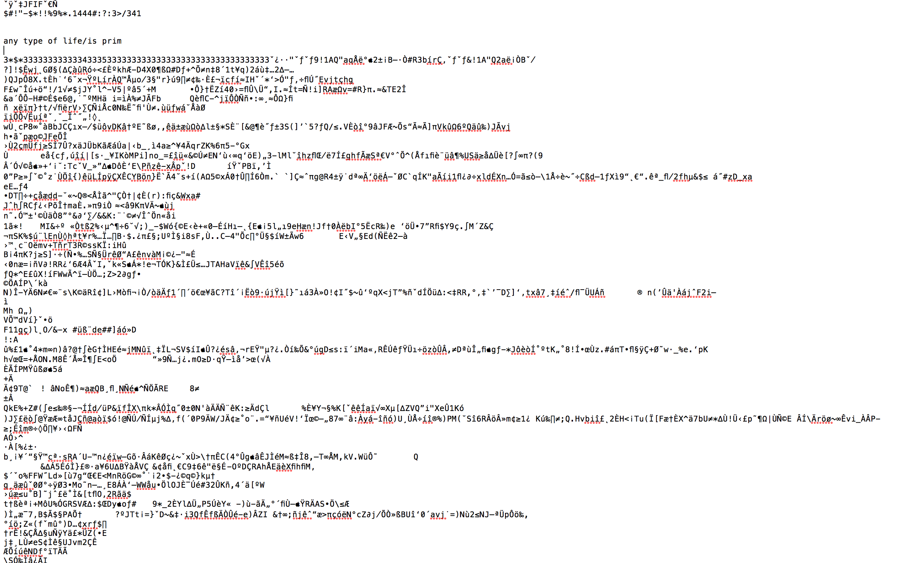
Le principe de survie et de résistance de la bactérie annonce à ce titre le devenir d’un discours désormais au-delà des angoisses de transport mais également le fonctionnement d’une autre littérature. La Deinococcus radiodurans a la capacité de réparer son propre ADN indéfiniment en faisant appel à des copies de son génome (la bactérie a en bibliothèque 4 à 10 copies de son génome). En comparant les versions de son ADN (2 copies en plus de l’original sont nécessaires à la bactérie pour procéder aux réparations), elle peut résusciter quelques heures après sa mort (12 à 14 heures lors d’une destruction partielle de l’ADN). Dans l’hypothèse d’une attaque, par radiation ou sonnets anti-bactériens, la Deinococcus radiodurans a donc la possibilité de restaurer le texte d’origine par un procédé proche de l’édition savante.
Dans le futur des littératures bactériennes, plusieurs questions peuvent cependant être posées :
- la bactérie est-elle consentante ?
- a-t-elle un droit de regard sur la création ? des crédits de co-auteure ?
- peut-elle refuser d’assimiler un vers selon ses préférences en matière de poésie ? assimile-t-elle des textes anti-bactériens ?
- pourra-t-on trouver un Bök en décomposition au fond d’une boîte de corned beef ?
Dans sa vie désormais organique, le texte bactérien réintègre la dimension intrusive de l’inscription, imposant une information dans une matière en provoquant réponse ou mutation, tout en accusant l’hubris masculin d’un projet. Ce n’est pas parce que le récit n’est plus humain (produit par bactérie, machine ou singe) que l’auteur n’en demeura pas une figure sacrée dans son humanité.
it's alive
ça propage mes mots
les répand dans le monde
Le poète insémine une forme du vivant par sa parole pour voir évoluer cette parole dans son éprouvette. Ce qui pouvait se présenter sur le papier comme une expérience de dépassement de l’exclusivité humaine littéraire,
voyez une bactérie, elle-aussi, peut créer
voyez comme elle protège et défend ce vers mieux que n'importe quel disque dur
voyez son style, son intuition, sa plume
relève malgré tout d’un ethnocentrisme où la réaction bactérienne est une réponse littéraire d’un autre type.
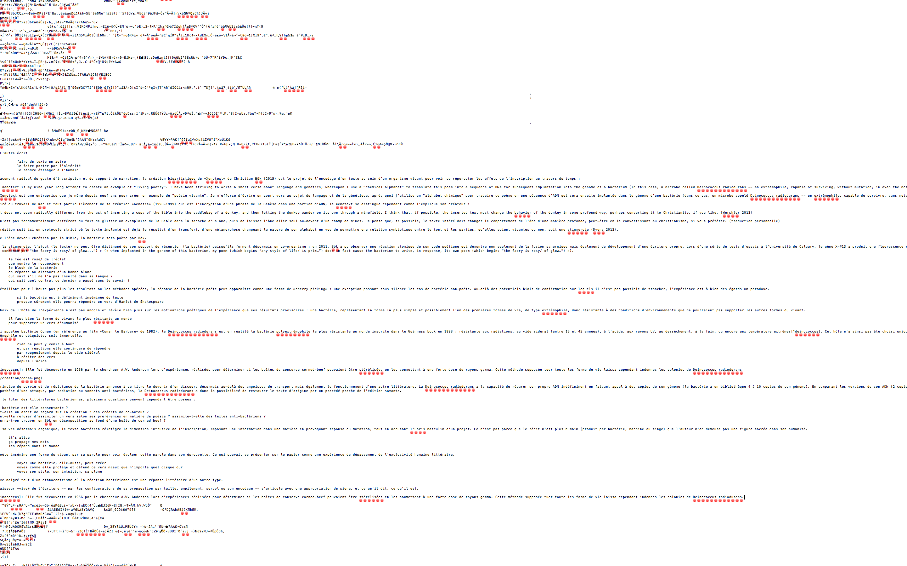
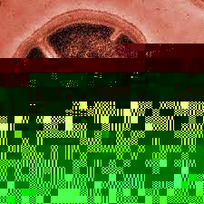
L’épaisseur vive de l’écriture – par les configurations de sa propagation par taille, empilement, survol ou son encodage – s’articule avec une appropriation du signe, et ce qu’il dit, ce qu’il est.
Embrassements du signe #
seing
empreinte
marque
Appréhendée par le regard, la trace entre dans la pièce des catégories, meublée de cases, de coches et de classes de matières. La classification par l’entendement a pour fonction de ramener les qualités plastiques à un mode de discours, à une structure de relation et à les estampiller d’une césure.
d'un côté
illustre
dessine
gribouille
figure
d'un côté
écrit
rédige
griffonne
inscrit
Rhétorique pour diviser des ordres d’expressions, la démarcation de la trace sert de ciseau pour justifier deux institutions et expertises culturelles, notamment disciplinaires (dont Belles Lettres, Beaux-Arts). Nuanciers entre les belles expressions, les approches du signe varient sur une courbe de gradation allant d’un point à un autre. Certaines font une distinction de l’importance (l’écriture légende dans le cas d’une œuvre picturale, l’image illustre dans le cours d’un texte) ; d’autres jouent de l’hybridité des marqueurs (le calligramme ou l’ekphrasis). Or, dans les deux cas, il est une idéalisation de la trace pour en faire un signe, le sceau d’un sens. Dans les différents arts graphiques de la lettre, même ceux qui mettent en scène la porosité des catégories lisible/visible et leur fertile cohabitation, il demeure une scission interne à la modélisation.
mettre l'écriture au service de l'image
faire de l'image un cadre de l'écriture
Le dépassement de la hiérarchie entre écriture et image se fait par le rebours de la trace, soit par la reconsidération de ce que peut être le signe dans ses incidences matérielles, dans un au-delà des catégories, en résistance à un certain académisme par lequel regarde aussi une tradition humaniste.
nous pensons toujours les choses par deux
ce qui est se définit par ce qui n'est pas
Le réel est certainement moins défini dans sa nature par la frontière que par la relation, ce qui fait de l’écriture et du fait littéraire qui ne peut pas être résumé à la lettre et au régime du lisible.
[I]l n’est pas de texte qui, pour advenir aux yeux du lecteur, puisse se départir de sa livrée graphique. ( Citation: Souchier, 1998 Souchier, E. (1998). L’image du texte pour une théorie de l’énonciation éditoriale. Les cahiers de mediologie, 6(2). 137–145. Retrieved from https://www.cairn.info/revue-les-cahiers-de-mediologie-1998-2-page-137.htm )
La livrée graphique que souligne Souchier est justement un rappel de la plasticité de la trace écriture qui importe autant qu’une énonciation éditoriale. La plasticité est ici appréhendée comme les conditions matérielles mises en relation, testées dans leurs résistances en termes de caractéristiques physiques mais également en termes de renversement du rapport d’inscription.
Si à l’âge classique folie et littérature s’excluaient, le XXe siècle est le siècle d’une écriture qui s’écrit toute seule, et qui à ce titre échappe à l’exigence du sens pour devenir un simple jeu de symboles, c’est-à-dire un code qui ne peut se déchiffrer qu’a posteriori. ( Citation: Guez & Vargoz, 2017 Guez, E. & Vargoz, F. (2017). La mort de l’auteur selon Friedrich Kittler. Appareil(19). https://doi.org/10.4000/appareil.2561 )
Les créations comme celles de Mallarmé, Morgenstein, Ball ou George, entre dadaïsme, surréalisme ou mouvement anti-romantique de la littérature ont contribué à un bouleversement, qui est toujours sujet d’étude et de discours, en proposant des modèles d’œuvres s’affranchissant du sens en même temps qu’elles expérimentaient les matérialités de la page, des lettres ou des sons. Les entreprises littéraires du regain de la matérialité ont eu pour cible le texte dans son corps autant que son cadre littéraire, soit autant sur ce qui permet de l’identifier comme tel que de le limiter à un objet identifiable comme tel. Est alors davantage concernée la page, comme étendue des possibles décentrements, détournements ou insolences littéraires, mais cela n’exclue pas l’intervention sur la feuille, bien au contraire : CMMP est en soi le cisaillement de la feuille pour la cohésion de la page. En soi, CMMP est un petit livre : peu épais, il renferme 1091 mots, soit 15 phrases par page, 10 pages, 140 vers. C’est hors des mots que se pense l’immensité. Placée dans le design de la page, la potentialité poétique de la création n’échappe pas aux limites du réel : le modèle de la combinaison selon Queneau est une première limite au nombre de combinaisons, les caractéristiques plastiques du papier en sont une deuxième. Détermination, la matière de l’écriture est où se cristallisent toute la force et la tourmente d’une littérature.
La trace à rebours #
qui du signe ?
avant que ne se pose mon regard, mes doigts,
quelle est cette trace au creux de ma paume ?
comment s'articule t-elle avec mes pores ?
sa forme même vient-elle de mon regard
ou de la façon dont mon regard est agencée par elle ?
La question de l’origine de la connaissance (« d’où viennent nos idées ? ») peut certainement servir d’agent pour saisir les tensions entre idéalité et matérialité, entre les catégories du signe qui sont autant de fissions à partir du fait littéraire.
Il ne faut pas croire que les matérialités ou les formes institutionnelles de cette transmission soient sans nul effet sur les idées et les discours : l’étanchéité des deux est loin d’être évidente. ( Citation: Méchoulan, 2010, p. 17 Méchoulan, É. (2010). D’où nous viennent nos idées ? Métaphysique et intermédialité (VBL Éditeur). Retrieved from https://secure.sogides.com/editeurs/3/7/ext_9782896491476.pdf )
À rebours de la trace, il est un ensemble de conjectures matérielles, nœud de serpents emmêlés que l’œil de l’entendement vient organiser en fils ramenés en belotes.
Les perceptions d’une hiérarchie texte/image sont peut-être moins le fait direct de modes opératoires des institutions artistiques qu’un symptôme d’une distinction plus profonde. ( Citation: Mellet, 2023 Mellet, M. (2023). « Mais étaient-ce des signes ? ». Revue Fémur, 7. Retrieved from https://revuefemur.com/index.php/2023/06/10/mais-etaient-ce-des-signes-les-embrassements-graphiques-du-texte-et-de-limage/ )
Renversant le privilège de l’écriture sur l’image, qui a été aux fondements d’une rhétorique logocentrée, Christin recompose le récit de la marque graphique en ne plaçant ni l’image ni l’écriture au commencement de tout, mais en rappelant la réalité matérielle du dispositif d’inscription :
[L]’écriture est née de l’image […] l’image elle-même était née auparavant de la découverte – c’est-à-dire de l’invention – de la surface : elle est le produit direct de la pensée de l’écran. ( Citation: 2009, p. 8 Christin, A. (2009). Poétique du blanc : vide et intervalle dans la civilisation de l’alphabet (Nouvelle éd. revue et augmentée). Vrin. )
Spécialiste de l’histoire de l’écriture et des relations entre texte et image, Christin lie dans leur genèse l’écriture et l’image. Livrée ou valeur graphique du support, l’écriture ne peut pas se départir de la trace d’origine
(
Citation: 1995
Christin,
A.
(1995).
L’image écrite, ou, La déraison graphique.
Flammarion.
)
sans être déterminée par une rationnalité. Dans la pensée de l’écran, la valeur graphique existe en dehors de l’impératif de sens, ce qui est une approche qui s’oppose radicalement à la thèse de la raison graphique représentée principalement par les travaux de l’anthropologue Goody
(
Citation: 1986
Goody,
J.
(1986).
La raison graphique : la domestication de la pensée sauvage.
Éditions de Minuit.
)
qui a fondé une longue et tenace tradition des sciences humaines. Pour « pousser plus loin l’analyse des effets de l’écriture sur les « modes de pensée » (ou sur les processus cognitifs) »
(
Citation: 1986, p. 31
Goody,
J.
(1986).
La raison graphique : la domestication de la pensée sauvage.
Éditions de Minuit.
)
, Goody fait de la donnée graphique le début d’une pensée de l’écrit et de la figure de l’homme moderne, le début d’un encore un autre roman de l’humanité, celui de l’homo graphicus. Dans la raison graphique, les sociétés modernes doivent leur rationalité au support graphique alphabétique, au développement des structures chères désormais aux travaux universitaires : liste, tableau, recette, formule. Autant de cadres et calques de pensée qui permettent « de poser et résoudre les problèmes »
(
Citation: Goody, 1986, p. 267
Goody,
J.
(1986).
La raison graphique : la domestication de la pensée sauvage.
Éditions de Minuit.
)
, soit à une pensée supérieure d’émerger, de fleurir, de procréer. Imposition d’une structure sur une matière dans un espace graphique contrôlé, défini, délimité, bridé et objectif, l’écriture permet alors « cet exercice de rumination constructive »
(
Citation: Goody, 1986, p. 97
Goody,
J.
(1986).
La raison graphique : la domestication de la pensée sauvage.
Éditions de Minuit.
)
, à savoir d’organiser et de domestiquer la pensée « sauvage ». Si aujourd’hui le terme raisonne résonne bien différemment, la pensée sauvage est celle du refoulé, des lapsus et des mythes, en référence à la pensée de Levi-Strauss comme : ce qui « se définit à la fois par une dévorante ambition symbolique, et telle que l’humanité n’en a plus jamais éprouvé de semblable, et par une attention scrupuleuse entièrement tournée vers le concret »
(
Citation: 2010, p. 263
Lévi-Strauss,
C.
(2010).
La pensée sauvage.
Presses Pocket.
)
. Cette arborescence en héritage léguée aux théories, rationalisant le signe, le place au cœur d’un discours où la raison fonde le progrès d’une société.
[la thèse de filiation verbale] a entraîné pendant des siècles l’occultation quasi complète des fonctions graphiques du système, au point qu’elle a empêché les théoriciens les plus récents qui tentaient de dégager l’écriture de ses apriorismes linguistiques de conduire leur démonstration jusqu’à son terme. ( Citation: Christin, 1995, p. 16 Christin, A. (1995). L’image écrite, ou, La déraison graphique. Flammarion. )
La déraison graphique proposée par Christin est au contraire une anti-sémiotique et un retour à une notion graphique comme porosité entre écriture et image. Pas de filiation verbale, l’écriture ne peut être contenue dans une seule heuristique du signe. En faisant se croiser plusieurs réflexions sur les relations entre écriture alphabétique et écritures idéo-picto-phono-graphiques, Christin déloge l’écriture et la place, comme l’image, dans le mouvement de la trace. L’écriture n’a pas de raison graphique propre, innée, qui ne doit rien à l’image.
L’écriture ne va pas au-delà du signe, au-delà de la trace matérielle.
L’écriture émerge du déchiffrement, soit d’une relation avec un dispositif de lecture qui ne préexiste pas au signe.
L’écriture émane autant d’un phénomène analogue à la révélation qu’à une théorie ou invention du support. ( Citation: Mellet, 2023 Mellet, M. (2023). « Mais étaient-ce des signes ? ». Revue Fémur, 7. Retrieved from https://revuefemur.com/index.php/2023/06/10/mais-etaient-ce-des-signes-les-embrassements-graphiques-du-texte-et-de-limage/ )
Déconstruction d’un édifice scientifique, habitus d’analyse et d’observation, l’approche anti-sémiotique dé-domestique la raison graphique en en révélant ses biais privilégiant l’écriture à tout autre système, et idéalisant le principe d’émergence de la connaissance. Redevenue signe, l’écriture est alors affaire de relation avec le réel du support : elle existe au-delà la signification ou de la représentation comme les premières images de l’humanité qui, selon la thèse de Leroi-Gourhan, ne sont pas inspirées par le réel même si elles en reproduisent l’apparence ( Citation: Leroi-Gourhan, 2014 Leroi-Gourhan, A. (2014). Le geste et la parole. [I], Technique et langage. Albin Michel. ) . Mattering, « un tracé n’est rien sans le support sur lequel il s’inscrit et qu’il ne peut se définir comme un signe qu’en relation avec lui » ( Citation: Christin, 1995, p. 17 Christin, A. (1995). L’image écrite, ou, La déraison graphique. Flammarion. ) , ce qui fait du registre, de la catégorie, du classement, des marques apposées a posteriori. Cet aspect justement permet de dépasser la thèse de Leroi-Gourhan qui reproduit la césure occidentale entre image et écriture selon un principe de disposition spatiale (disposition libre pour l’image ou linéaire pour l’écriture). Hors de toutes théories archéologiques, la frontière entre la liberté ou la ligne constitue la reproduction d’un amalgame pour Christin, la marque d’un a priori qui est celui de considérer que l’écriture se définit par l’efficacité ou la lisibilité, l’évidence ( Citation: Christin, 1995, p. 19 Christin, A. (1995). L’image écrite, ou, La déraison graphique. Flammarion. ) .
écrire
incisif
coupant
tranchant
L’essentialisation de l’écriture permet d’embrasser toute la question d’une hiérarchisation des arts d’expression, des formes de pouvoir sur le monde : thèse formulée par Lessing ( Citation: 2011 Lessing, G. & Teinturier, F. (2011). Laocoon ou Des frontières respectives de la peinture et de la poésie. Klincksieck. ) , la Littérature, parce qu’elle relève de l’articulé, est un art du temps tandis que les Arts plastiques, parce qu’ils relèvent de la matière, sont des arts de l’espace. Ainsi le texte est l’invisible, le Vrai ; tandis que l’image est le visible, le Beau. La synergie du signe défendue par Christin est une résistance aux catégories essentialisantes pour ouvrir les perspectives sur l’écriture (iconique, graphique, visible, synergique). L’écran dans sa pensée est alors ce lieu où coexistent les possibles de la trace dans un vertige de relations, ce qui correspond à la tabula pour Ferraris :
[L]a tabula est la condition de possibilité de la pensée – et cette circonstance est justement le petit ou le grand refoulé de l’homoncule et du logocentrisme. La représentation de l’esprit comme écritoire, comme tabula […] n’exclue pas la matière et, au contraire, présente le mental comme le résultat des traces et des modifications de la matière. ( Citation: Ferraris, 2014, p. 51 Ferraris, M. (2014). Âme et iPad. Presses de l’Université de Montréal. https://doi.org/10.4000/books.pum.289 )
Le travail de la trace est également la perspective développée par des créations qui ne font pas seulement une cohabitation mais qui cherchent à révéler la livrée graphique commune dans des compositions de rapports matériels.
L’épaisseur du blanc #
Un jour le peintre se plaint auprès du poète qu’il n’avance pas malgré la profusion de ses idées.
blocage
surchauffe
rien ne sort jamais
Mallarmé répond alors à Degas :
Mais Degas, ce n’est point avec des idées que l’on fait des vers… C’est avec des mots. ( Citation: Valéry, 1998 Valéry, P. (1998). Degas, danse, dessin. Gallimard. )
l'encre qui tranche dans le lisse
le foncé qui se prononce sur du neutre
et tout autour le blanc
chair unie normée
mat transparent
Le blanc de la page, celui qui procure l’épaisseur visuelle et graphique à l’écriture, n’est pas seulement contemplative, il est une donnée également tactile : « rough for plain text books or photocopies, smooth for magazines or illustrated book »
(
Citation: Ludovico, 2012, p. 113
Ludovico,
A.
(2012).
Post-digital print: the mutation of publishing since 1894.
Onomatopee.
)
/ « rugueux pour des photocopies ou des manuels, lisse pour des magazines ou des livres illustrés ». La couleur du blanc, son odeur, son accroche, son son bruit, sont autant d’empreintes que prend la main dans le geste de tourner une page. Si l’écran vient lisser cette perspective du toucher en la déplaçant à un endroit qui concentre, cristallise sous la norme d’un outil qui est écriture et lecture simultanée, les caractéristiques du support sont toujours en train de révéler sous nos doigts leurs mattering : la résolution, le polissage, la résistance des touches, les sons, les chaleurs.
Un objet ne devient visible qu’en rendant aveugle ce qui l’entoure. ( Citation: Christin, 2009, p. 13 Christin, A. (2009). Poétique du blanc : vide et intervalle dans la civilisation de l’alphabet (Nouvelle éd. revue et augmentée). Vrin. )
Rendu aveugle par une appréhension de la trace empreinte de la parole, le blanc graphique est rappelé par la poétique mallarméenne qui ne suit pas tant une raison graphique qu’elle compose avec une porosité, elle « renoue les liens archaïques de la parole et de l’image, qui associait une nouvelle fois l’écriture au ciel » ( Citation: 1995, p. 209 Christin, A. (1995). L’image écrite, ou, La déraison graphique. Flammarion. ) . Jouant sur les origines graphiques, Un coup de dés jamais n’abolira le hasard est un embrassement de l’écriture avec sa puissance iconique.

Poursuivant la trace à rebours de la raison de la mise en page ou de la ligne, le ciel du poème mallarméen est un travail plastique qu’ont remarqué Claudel (qui le nommait comme un poème « cosmogonique ») et Valéry :
Mallarmé, m’ayant lu le plus uniment du monde son Coup de dés, comme simple préparation à une plus grande surprise, me fit enfin considérer le dispositif. Il me sembla de voir la figure d’une pensée, pour la première fois placée dans notre espace… Ici, véritablement, l’étendue parlait, songeait, enfantait des formes temporelles. L’attente, le doute, la concentration étaient choses visibles. Ma vue avait affaire à des silences qui auraient pris corps. […] C’était, murmure, insinuations, tonnerre pour les yeux, toute une tempête spirituelle menée de page en page jusqu’à l’extrême de la pensée, jusqu’à un point d’ineffable rupture : là, le prestige se produisait ; là, sur le papier même, je ne sais quelle scientillation de derniers astres tremblait infiniment pure dans le même vide interconscient où, comme une matière de nouvelle espèce, distribuée en amas, en traînées, en systèmes, cœxistait la Parole ! […] – Il a essayé, pensai-je, d’élever enfin une page à la puissance du ciel étoilé ! (Lettre au directeur des « Marges », 1920 in ( Citation: Valéry, 1930, pp. 624-626 Valéry, P. (1930). Variété II. Gallimard. Retrieved from https://gallica.bnf.fr/ark:/12148/bpt6k939070f ) )
Figure d’une pensée, dispositif de silences ayant pris corps, astres en traînées, page étoilée… Le poème, en restituant le souffle de la page, est une prise en compte de la relation dans la matière littéraire. Composition spatiale où la « page blanche annonciatrice de mots » ( Citation: 1995, p. 213 Christin, A. (1995). L’image écrite, ou, La déraison graphique. Flammarion. ) , le fait littéraire est alors le lieu « où l’écriture se caractérise moins par l’élan d’un geste énonciatif – lequel se trouve d’ailleurs figé en stéréotype dans l’imprimé – que par le style et l’épaisseur charnelle ou aérienne de ses traits » ( Citation: 1995, p. 213 Christin, A. (1995). L’image écrite, ou, La déraison graphique. Flammarion. ) . Le je mis de côté dans le jeu de dés, l’énonciation est laissée aux espacements qui cristallisent l’incidence matérielle du discours.
Le naufrage advient par la présence physique des blancs, il émerge de l’image du texte : « Les “blancs”, en effet, insiste-t-il, assument l’importance, frappent d’abord » (Préface in ( Citation: Mallarmé, 2014 Mallarmé, S. (2014). Un coup de dés jamais n’abolira le hasard (Faksimile-Edition der Ausgabe 1914). Gallimard. ) ).

Le blanc est le travail de l’écran poétique, soit la donnée qui ne peut être distinguée de la réalité du support. Investissant ce qui est constamment ignoré, la page mallarméenne n’a pas été saisie dans toute son épaisseur par les contemporains du poète. La poétique du blanc « est demeurée obstinément invisible aux yeux de tous ses commentateurs, et cela jusqu’à nos jours » ( Citation: Christin, 2009, p. 145 Christin, A. (2009). Poétique du blanc : vide et intervalle dans la civilisation de l’alphabet (Nouvelle éd. revue et augmentée). Vrin. ) . L’édition réalisée en 1980 par la revue Change et le groupe d’atelier (Ronat/Papp), si elle a le mérite de prendre en compte davantage l’importance de l’espace (décrite notamment comme une « édition mise en œuvre »), se fonde sur une perspective linguistique du blanc ou sur la règle d’insertion du blanc qui, comme l’écrit Mitsou Ronat dans la préface de l’édition, est la suivante :
Insérer du blanc uniquement là où la langue a « surdéterminé » le lien entre les éléments disjoints. ( Citation: Mallarmé, 1981, p. 28 Mallarmé, S. (1981). Un coup de dès jamais n’abolira le hasard. Change errant. )
Une fois encore, l’image du texte est analysée comme substitut linguistique, dans une perspective d’analyse textuelle classique, une interprétation structuraliste qui donne une préférence à la parole, reniant sa mise en espace. Le fait que la phrase elle-même se trouve déplacée de son espace d’une page seule à la largeur de la double et que sa linéarité se poursuive par l’écart implique un travail de mise en page qui porte une vision du texte comme une composition des rapports plastiques. L’innovation d’une telle démarche poétique ne se situe pas au niveau linguistique, il ne s’agit pas de changer la langue ou de déplacer le centre de la narration d’un humain à un animal, mais au niveau de l’espace : en ajoutant des distances, Mallarmé « disperse » (selon son propre terme) et implique l’écriture dans un champ graphique qui invoque sa spatialisation et sa part picturale. C’est d’ailleurs ces deux aspects que semble retenir Broodthaers dans sa version du poème sous la forme de livre d’artiste : les mots sont remplacés par des lignes noires tout en conservant leurs emplacements d’origine. Il fait en sorte de que « le texte fasse corps avec le papier même » (Lettre de Mallarmé à Edmond Deman du 28 avril 1888 in ( Citation: Mallarmé, 1969 Mallarmé, S. (1969). À Edmond Deman. 28 avril 1888. InMondor, H. & Austen, L. (Eds.), Correspondance. (pp. 188). Gallimard. ) ). La disposition poétique ne fait pas figure de (logique du calligramme) mais est l’image du texte. L’image du texte, au sens plastique, n’est pas portée par les mots, mais également par ce qui n’en est pas.
Image écrite #
La surface est affaire de déchiffrement, non pas logique mais graphique, pour comprendre que l’émergence du signe à partir de la trace ne peut se départir des incidences plastiques. Dans ce rebours de l’observation, le foie de Plaisance est un exemple qui illustre bien la mesure graphique du réel.
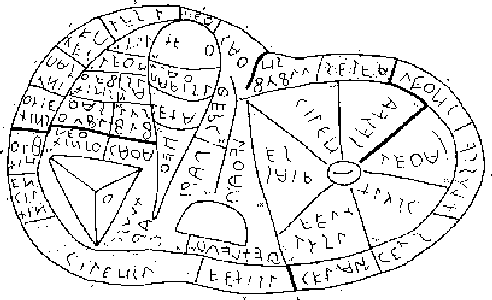
Maquette étrusque de bronze d’un foie de mouton, grandeur réelle (soit 126 mm de long sur 76 mm de large et 60 mm d’épaisseur), datée de la fin du IIe siècle avant J.-C., le foie de Plaisance est un objet du temps sujet à de nombreuses interprétations mais servant principalement comme outil de divination par héparoscopie (étude du foie d’animaux sacrifiés). La série des inscriptions gravées qu’il contient sont pour la majorité des abréviations, ce qui n’a certainement pas aidé à parvenir à un consensus dans le sens du texte. À l’exception des deux mots identifiés (soleil et lune), le foie est un objet hors de la raison graphique : il est une carte, celle du ciel, dont le sens est assuré par l’espace, par l’organisation des signes plutôt que le déchiffrement distinct des inscriptions ( Citation: Christin, 1995 Christin, A. (1995). L’image écrite, ou, La déraison graphique. Flammarion. ) . Dans la mesure graphique du foie, les signes s’articulent.
Autre embrassement du signe, les créations de Leiris, désignées comme des calligrammes, sont en réalité plus complexes tant elles assimilent dans la trace poétique les typologies du discours. Les traces dans Glossaire ( Citation: Leiris, Masson & al., 2014 Leiris, M., Masson, A. & Yvert, L. (2014). Glossaire j’y serre mes gloses suivi de Bagatelles végétales. Gallimard. ) outre-passent la logique de la figuration et de l’imitation formelle, à la différence du poème d’Apollinaire, où l’agencement du texte fait figure d’image.
For as soon as writing is “framed” it becomes an image. ( Citation: Krauss, 1994, p. 284 Krauss, R. (1994). Optical Unconscious (1st paperback ed). MIT Press. )
Lorsqu’une écriture est « encadrée », elle devient une image. (traduction personnelle)
Le calligramme est par essence un jeu de l’écriture avec ce qui a trait à l’image, la belle forme. Recherche de connivence graphique, l’agencement permet en ce sens de faire le lien entre le signe et ce qui l’entoure : le signe sert de sens mais également d’élément conducteur dans la forme graphique ou l’image du texte.
L’approche classique du calligramme repose sur des effets d’arrangements et de mise en page.
tordre l'écriture pour lui la dérouter
jouer de la ligne pour la faire varier
faire suivre à la lettre les contours d'une autres formes
conduire le bœuf différemment, le laisser flâner
L’approche de la belle écriture de Leiris est cependant différente. Écriture résistante au même endroit que les recherches de Christin, exploration de la trace à rebours, la création de Leiris cherche à « délivrer les mots de leur mémoire factice – étymologique ou culturelle – et les réinvestir par celle, hasardeuse mais nécessaire à sa création et à sa vie, de celui qui les prononce » ( Citation: 1995, p. 261 Christin, A. (1995). L’image écrite, ou, La déraison graphique. Flammarion. ) .
Les calligrammes de Leiris ne relèvent pas d’une transposition du régime linguistique vers le registre graphique mais sont une recherche d’embrassement texte/image sans visée figurative ( Citation: Mellet, 2023 Mellet, M. (2023). « Mais étaient-ce des signes ? ». Revue Fémur, 7. Retrieved from https://revuefemur.com/index.php/2023/06/10/mais-etaient-ce-des-signes-les-embrassements-graphiques-du-texte-et-de-limage/ ) .
Les commentateurs du Glossaire ont tous considéré les calligrammes comme des exercices gratuits. Analysant longuement le volume, Gérard Genette, dans Mimologiques, ne fait jamais allusion à eux. Mépris ? Méprise ? Les deux à la fois sans doute. Et si l’aspect plastique de ces textes est certainement la cause du mépris que manifestent à leur égard les analystes littéraires, Michel Leiris est lui-même, dans une certaine mesure, responsable de la méprise. Ces calligrammes qui ne « commencent » pas et qui ne sont donc pas des phrases (et encore moins des phrases de dictionnaire) peuvent en effet s’interpréter comme de véritables images parce qu’ils comportent des titres. Or l’on sait bien à quoi sert le titre d’un tableau : à rendre possible un discours à son sujet. Il constitue la preuve implicite du fait que le document qu’il commente n’appartient pas à l’ordre du langage mais à une pensée visuelle, à une divagation muette, à un imaginaire de la matière… Le titre doit permettre d’ancrer l’étrangeté de l’image dans le monde verbalisable. Le titre dit que l’image est hors de lui. ( Citation: Christin, 1995, pp. 264-265 Christin, A. (1995). L’image écrite, ou, La déraison graphique. Flammarion. )
Les mots du Glossaire sont des gymnastiques de la lettre, de la plasticité graphique de la langue entre discours et figure. Le mot suffit : il apporte suffisamment de densité dans une forme simple. Le geste d’écriture est alors un travail de la donnée graphique, soit de la déraison de la lettre.
Dans la concision de la matière verbale, le titre est une composante du calligramme : de manière traditionnelle avec des créations comme Fronde et Hache qui désignent la forme du poème (logique commune aux calligrammes d’Apollinaire, le Poème en forme de Violoncelle est un poème en forme de violoncelle), mais également avec des explorations poétiques.
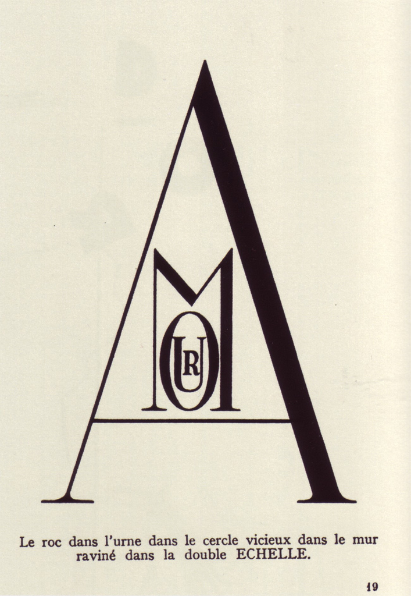
Le roc dans l’urne dans le cercle vicieux dans le mur raviné par la double ÉCHELLE ( Citation: Leiris, Masson & al., 2014, p. 83 Leiris, M., Masson, A. & Yvert, L. (2014). Glossaire j’y serre mes gloses suivi de Bagatelles végétales. Gallimard. ) est une poupée russe graphique où les conditions du discours ne règnent plus seules. La lettre du poème est un contenant pour la suivante.
Chaque lettre prise dans la valeur graphique de son signe devient un mot, l’inscription devenant image, devenant mot. La lecture est ici question de profondeur de l’image puisque les signes ne sont plus limités à un unique registre d’expression mais sont en mouvement entre deux modes d’appréhension permettant ainsi de lire le texte dans la trace et de voir l’image dans le verbe. ( Citation: Mellet, 2023 Mellet, M. (2023). « Mais étaient-ce des signes ? ». Revue Fémur, 7. Retrieved from https://revuefemur.com/index.php/2023/06/10/mais-etaient-ce-des-signes-les-embrassements-graphiques-du-texte-et-de-limage/ )
Le mot est alors la vision de ce qu’il dit ( Citation: Christin, 1995, pp. 273-274 Christin, A. (1995). L’image écrite, ou, La déraison graphique. Flammarion. ) et la lettre fait figure de forme du monde (le A est une double échelle comme le A dans Mines à Mues). Écrivain visuel, Leiris fait ici le jeu de l’épaisseur graphique en travaillant le signe comme un espace avec suffisamment de profondeur pour faire s’alterner l’appréhension des traces et le rappel de l’origine graphique de l’écriture.
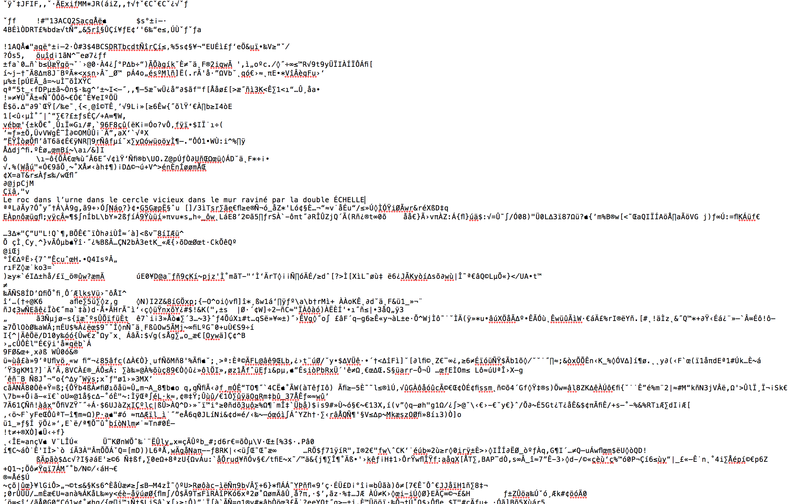
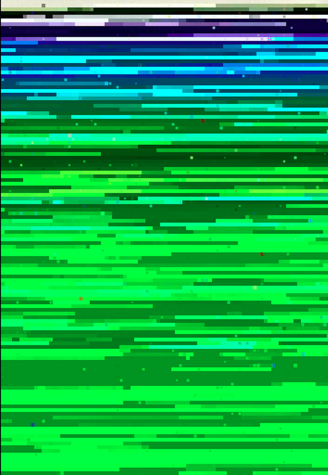
La quête du geste #
face à force
le poignet tempère
le support n'attend pas, il observe
Les oscillations de Michaux entre littérature et esquisses sont à l’image d’un métronome, elles sont le balancement non d’une hésitation mais d’une recherche phénoménologique particulière ( Citation: Tourte, 2018 Tourte, É. (2018). « Contre la colle les uns les autres » : l’épreuve du contact chez Henri Michaux. Les Lettres Romanes, 72(3-4). 385–394. https://doi.org/10.1484/J.LLR.5.117223 ) . Au-delà de la nature du signe, des catégories, des marqueurs, des frontières, ce qui guide Michaux jusqu’au support, c’est le mouvement, soit le déploiement du geste comme pur rapport au monde. Ni raison graphique ni impératif de production de discours, le processus est ce que tente de retranscrire la trace, l’écriture implémente le récit de son geste d’émergence. Libération du nom, de « cette dimension du discours qui a la capacité de produire ce qu’il nomme » (« Le genre comme performance » [1994] in ( Citation: Butler, 2005, p. 17 Butler, J. (2005). Humain, inhumain. Le travail critique des normes : entretiens. Éditions Amsterdam. ) ), la procédure est une confrontation avec la matière tout en essayant de saisir l’instant de la rencontre,
de le capturer dans le support,
de le piéger là sous les regards,
de le suspendre pour qu'il montre sa vraie nature,
qu'il explique ses motifs, qu'on sache quel est notre rôle dans son plan.
Création qui « fait l’épreuve du contact » ( Citation: Tourte, 2018, p. 386 Tourte, É. (2018). « Contre la colle les uns les autres » : l’épreuve du contact chez Henri Michaux. Les Lettres Romanes, 72(3-4). 385–394. https://doi.org/10.1484/J.LLR.5.117223 ) , l’inscription refuse pour autant l’adhésif, la « colle » : il ne s’agit pas de figer, aplatir ou écraser, mais bien d’être au contact, de toucher. La colle est ce qui empêche l’ampleur du geste de continuer à se répandre, qui poursuit l’apparition du noir sur blanc que poursuit elle-même la main… Le support n’est en ce sens pas le lieu final de la trace, il n’en est qu’une étape intermédiaire puisque cette trace continue de se développer en restant à son contact.
La recherche d’intimité entre le signe et le support évoque à bien des égards l’ambition poétique de Mallarmé – « que le texte fasse corps avec le papier même » (Lettre à Edmond Deman du 28 avril 1888 in ( Citation: Mallarmé, 1969 Mallarmé, S. (1969). À Edmond Deman. 28 avril 1888. InMondor, H. & Austen, L. (Eds.), Correspondance. (pp. 188). Gallimard. ) ) – puisqu’il s’agit de parvenir à inscrire en suspens le mattering, ce qui lie le signe et la matière, en dépassant un principe d’écriture comme imposition.
Au début de cette quête du geste se trouve d’abord la libération du poignet, soit l’entreprise de libération de la perspective de création : une « main-graphie » pour reprendre une expression de Leroi-Gourhan dans son étude sur le geste ( Citation: 2014 Leroi-Gourhan, A. (2014). Le geste et la parole. [I], Technique et langage. Albin Michel. ) . L’orientation du trait est d’abord tournée vers la ligne de la page, pour permettre à l’écriture de « participer au monde par des lignes […], une ligne plutôt que des lignes […], une seule que sans relâcher le crayon de dessus le papier je laisse courir » ( Citation: Michaux, 2000, p. 11 Michaux, H. (2000). Emergences - resurgences. Skira [u.a.]. ) . Le désir de continuité entre l’être et la matière est déjà là et il s’incarne comme une rébellion graphique.
Tâtonnement entre les lignes poreuses, le poème « Dessins commentés » au sein du recueil La Nuit remue ( Citation: Michaux, 1997 Michaux, H. (1997). La nuit remue (Nouvelle éd. rev. et corr). Gallimard. ) est une écriture qui se situe dans le prolongement de dessins : les modes d’expressions ne sont alors plus des antagonistes, ils participent du même déroulement de la main et de son outil dans le parcours des incidences matérielles. La Plume – personnage inventé (Plume 1930) et instrument réel – constate sa propre disparition au travers d’une description qui fait à la fois figure de moquerie de sa propre imprécision et d’ekphrasis.
Cet amas de têtes forme plus ou moins trois personnages qui tremblent de perdre leur être ; sur la surface de la peau les yeux braqués brûlent du désir de connaître ; l’anxiété les dévore de perdre le spectacle pour lequel ils vinrent au-dehors, à la vie, à la vie. ( Citation: Michaux, 1998, pp. 436-437 Michaux, H. (1998). Œuvres complètes. Gallimard. )
La quête du geste est une recherche d’intimité avec la réalité graphique, c’est pourquoi Michaux quitte peu à peu le récit pour développer un autre système de narration par le tracé. Son émancipation progressive du régime verbal, qui restera tout de même présent durant ses années de peinture et formera un réseau de discours entre les modes d’expression, est une invention de signes, influencée notamment par son voyage en Chine de 1931 ( Citation: 1997 Michaux, H. (1997). Un barbare en Asie (Nouv. éd., revue et corr). Gallimard. ) et donc marquée par la tradition de la calligraphie. Dans son texte autobiographique Portrait de A. de 1930 (in ( Citation: 1998 Michaux, H. (1998). Œuvres complètes. Gallimard. ) ) apparaît et revient le signe-image de la « boule hermétique et suffisante, un univers dense et personnel et trouble où n’entrait rien » ( Citation: Michaux, 1994, p. 110 Michaux, H. (1994). Plume: précédé de lointain intérieur (Nouv. éd., revue et corr). Gallimard. ) : moi roulé sur lui-même, cercle parfait, rond ou ronde pris dans un mouvement, relation sans jamais l’abandon.
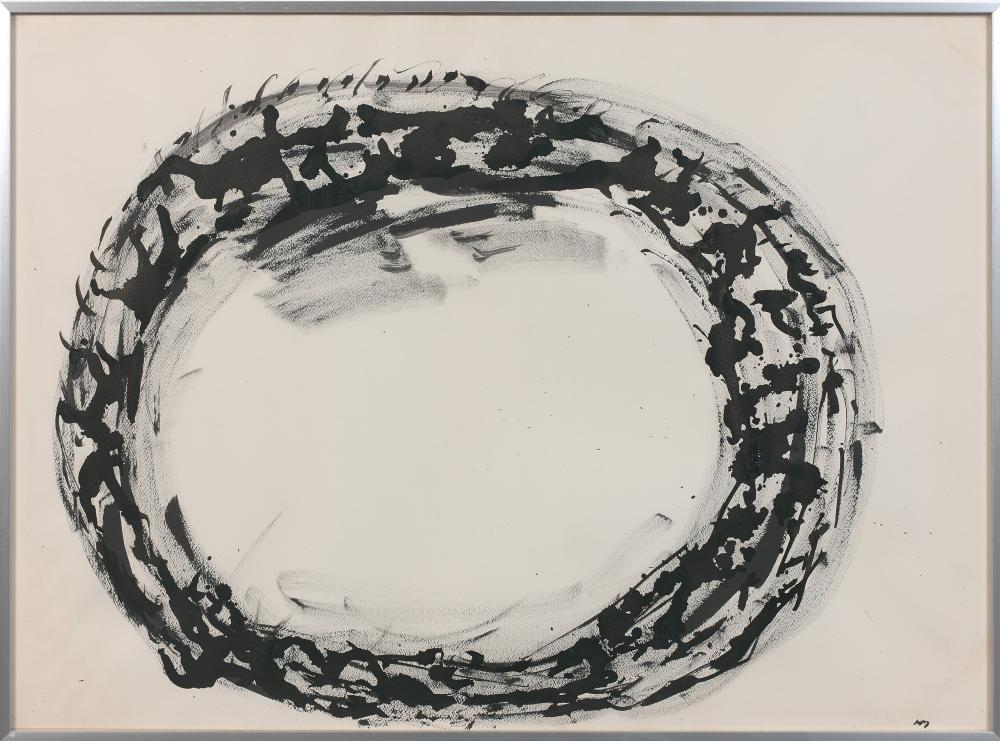
rond, bout de ligne qui se clôt
puis trait d'union
lien de l'individu au monde
De la naissance à la mort, un trait
modèle universel.
Du matin à la nuit
de l’unicellulaire à la baleine
de la cueillette à l’industrie
Traits irréductibles de l’élémentaire,
sans alarmes sans ornements
premier début et dernière des traces
de la tribu à la Société
de la main à l’empire des bureaux
Des traits plus petits que les plus petits, partout
bâtonnets infimes qui échappent à la vue
des traits infiniment savent se répandre, se multiplier
au-dedans des corps humains impuissants
Maîtres des maladies. ( Citation: Michaux, 1998, p. 1252 Michaux, H. (1998). Œuvres complètes. Gallimard. )
Composition d’un art du geste, le tracé est un mi-chemin entre silhouette et racine qui d’abord expose l’individu ou un groupe restreint d’individus pour ensuite saisir le mouvement de leur communion.
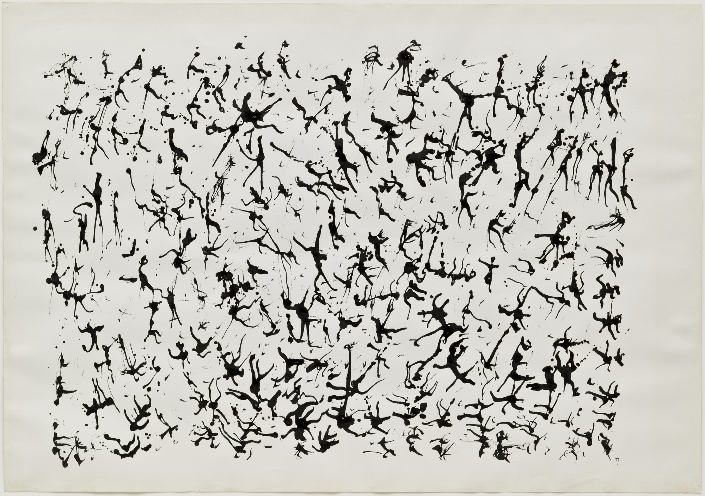
Le mouvement est l’appréhension du signe au-delà des catégories de présence : justement en essayant d’échapper à la colle, la trace cherche à pallier ce que ni le discours ni la ligne ne peuvent retranscrire en termes de vivacité.
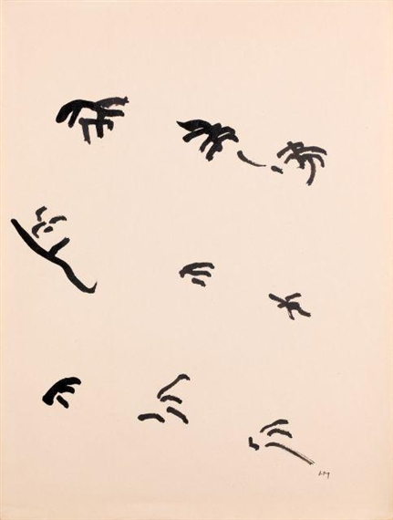
L’épuration du trait, entre gramme et graphe, est un cheminement progressif de la main vers une essence, qui n’est pas le figement du signe mais bien sa prise au vol. C’est notamment ainsi que l’on peut comprendre que les créations de Michaux se vident au fil du temps : d’espaces pleins, « hermétiquement noirs » ( Citation: Michaux, 1998, p. 706 Michaux, H. (1998). Œuvres complètes. Gallimard. ) , des poèmes bavards jusqu’à des temps vides et disponibles, des marques généreuses et volubiles jusqu’à des traces restreintes. Une lecture phénoménologique de l’œuvre de Michaux permet de voir apparaître graduellement le mouvement, comme dans une chambre noire.
L’épreuve du contact est alors un jeu d’équilibre entre un signe se refermant sur lui-même et l’ouverture d’un espace de création. ( Citation: Mellet, 2023 Mellet, M. (2023). « Mais étaient-ce des signes ? ». Revue Fémur, 7. Retrieved from https://revuefemur.com/index.php/2023/06/10/mais-etaient-ce-des-signes-les-embrassements-graphiques-du-texte-et-de-limage/ )
Il n’est dès lors plus question de production mais de processus du geste. Par le travail du déroulement du tracé, Michaux comprend le geste comme une conjoncture de son environnement de création. Il n’y a, au fond, que ça, des gestes plutôt que des signes :
Mais étaient-ce des signes ? C’étaient des gestes, les gestes intérieurs, ceux pour lesquels nous n’avons pas de membres mais des envies de membres, des tensions, des élans. Les signes, eux, sont à la surface, ils ne bougent pas plus loin que les mains et les pieds. ( Citation: Michaux, 1998, p. 431 Michaux, H. (1998). Œuvres complètes. Gallimard. )
Intervention d’un corps dans l’espace diffus du support, le geste est un principe de relation qui invente l’écran ou la surface. La croyance en la performativité, en l’intervention, évoque chez Michaux un certain culte de l’intentionnalité (« [t]el est mon dessin, tel il se poursuit » ( Citation: Michaux, 1998, pp. 436-437 Michaux, H. (1998). Œuvres complètes. Gallimard. ) ). La matière est cependant l’espace de la rencontre, le lieu où procèdent les incidences, les mattering.
À la rencontre des incidences #
dans le geste, la pénétration,
va savoir si l'outil infatué
n'est pas lui-même transi de son mouvement
Lorsque j’écris, mon corps procède à une computation physique, un effort qui peut se décliner en une multitude d’actions. Ces gestes ou gesticulations ne résultent pas seulement d’une imposition active sur passive, elles sont également remodelées par l’impact même qu’elles provoquent.
C’est l’occurrence matérielle qui détermine la genèse des idéalités. (Alloa in ( Citation: Kittler, 2018, p. 13 Kittler, F. (2018). Gramophone, film, typewriter. les Presses du réel. ) )
Dans l’idée de performance, il est l’idée que l’expérience humaine des choses n’est pas le seul rapport, que les choses vibrent et qu’un rapport se compose dans cette vibration. Le terme de vibration n’est pas en référence à un quelconque tantrisme (même s’il vibre aussi), mais sur une expression employée par Jane Bennett. Dans Vibrant Matter, cette dernière propose de déplacer l’attention de l’expérience humaine des choses aux choses hors-expérience pour souligner la participation active de forces non-humaines dans les évènements du monde ( Citation: 2010 Bennett, J. (2010). Vibrant Matter: a Political Ecology of Things. Duke University Press. ) . Ce qui pourrait être résumé par vitale, vibrante désigne chez Benett « the capacity of things – edibles, commodities, storms, metals – not only to impede or block the will and designs of humans, but also to act as quasi-agents or forces with trajectories, propensities, or tendencies of their own » ( Citation: 2010, p. VIIII Bennett, J. (2010). Vibrant Matter: a Political Ecology of Things. Duke University Press. ) . Bennett inscrit cette réflexion sur la matière vivante et la force vitale inhérente dans une histoire longue de la philosophie occidentale (citant notamment Kant, Bergson, Hans Driech, mais aussi Spinoza, Nietzsche, Thoreau, Darwin, Adorno et Deleuze). Si cette pensée concerne davantage la théorie politique (notamment les analyses politiques des évènements publics)4, elle a le mérite de se développer autour de la notion de matérialité vitale, force qui traverserait les corps qu’ils soient humains ou non (et qui donc dans l’approche de Bennett ont des implications politiques concrètes).
La recherche sur les matterings, les incidences matérielles, est une mise en tension de plusieurs a priori des sciences humaines.
chose informe, inerte et passive étendue
attendant que j'y impose ma volonté
suprématie de mon expérience et de mon discours
Au regard des nouveaux matérialismes – terme vaste sur lequel on s’accordera pour le définir comme « a non-anthropocentric realism grounded in a shift from epistemology to ontology and the recognition of matter’s intrinsic activity » ( Citation: Gamble, Hanan & al., 2019, p. 118 Gamble, C., Hanan, J. & Nail, T. (2019). What is New Materialism?. Angelaki-journal of The Theoretical Humanities, 24(6). 111–134. https://doi.org/10.1080/0969725X.2019.1684704 ) – les choses ne sont plus des objets au sens sémiotique : leur valeur, leur force, leur présence ne sont pas exclusivement déterminées par le sujet pensant. Le Matter matters de Barad ( Citation: Barad, 2007 Barad, K. (2007). Meeting the Universe Halfway: Quantum Physics and the Entanglement of Matter and Meaning. Duke University Press. ) résonne également en ce sens : identifiant des actions de la matière, des agencements5. Ce que l’on pourrait nommer par matière est un ensemble de force d’actions6, son opérabilité7 et de performances dont dérivent les choses8.
Il n’y a, dans cette rhétorique qui s’oppose à celle de l’immatérialité, pas de séparation entre des forces abstraites (discours, pensée, concepts, écritures) et des forces concrètes (matières, supports).
Il n’y a, dans cette perspective d’une littérature incarnée, pas de fond et de forme du texte séparées mais un seul et même ensemble de dynamiques matériellement inscrites, qui inventent l’écran.
Dans cette perspective, en tentant le jeu de saisir un fragment de ce qui nous impacte, plusieurs procédures de fouille du signe, de trifouillage de la chair d’écriture sont sondées à la suite en tant que rencontres avec les incidences matérielles du fait littéraire.
Recouvre #
obsession des overlay
des couches sur des couches sur des couches
l'épaisseur d'un format qui pèse de densité
rassembler au même endroit
et jouer de la transparence comme présence
de l'absence comme opaque
Recherche de coïncidence graphique mais également matérielle entre des régimes de la trace, des créations comme A Humument de Tom Phillips sont des alliages et alignements de composants dans un même corps. À l’instar de Mallarmé dont l’entreprise poétique fait de la trace l’élément graphique d’un naufrage à la lettre, les réécritures invasives que l’artiste britannique Tom Phillips effectuent sont pensées comme des pondérations progressives entre les strates. À la différence de Day de Goldsmith ( Citation: 2003 Goldsmith, K. (2003). Day. Geoffrey Young. ) , qui est une retranscription au mot d’un numéro du New York Times, A Humument est une recherche de compositions de matières.
prendre un ouvrage
et venir le réécrire sans ajouter de lettres
et venir le réécrire encore en jouant des signes
et venir le réécrire en soutirant de nouveaux mots
Opérant en deçà de toute originalité radicale de sa matière, le projet A Humument se présente sous la forme d’une suite de rééditions du roman victorien A Human Document de Mallock ( Citation: Mallock, 2005 Mallock, W. (2005). A human document. Elibron Classics : Adamant Media Corporation. ) . Les mots d’origine sont alors recouverts pour la majorité, quelques-uns épargnés en entier, le reste est érodé par une suite de formes et figures : l’édition de référence est alors le support de compositions graphiques qui respectent le format de la page et qui, au fil des rééditions, rongent, comme par faim de manne lettrée, l’espace du purement lisible. Le récit est recomposé par le recouvrement concret de ses composants.
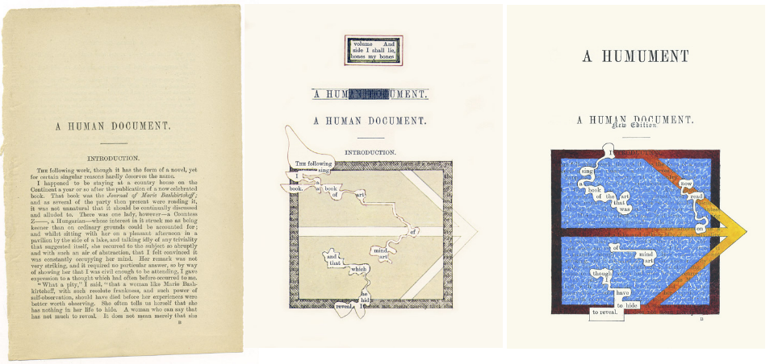
Page particulière parmi d’autres, la page de titre est celle avec le moins d’évolutions au fil des éditions des recouvrements, à la différence de pages comme la page 33 qui évolue au rythme de recherches graphiques.
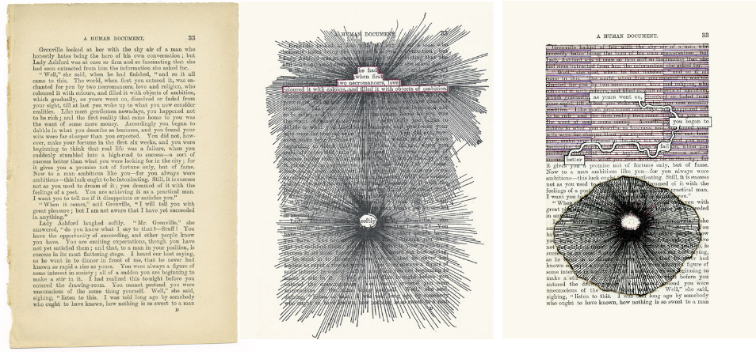
D’un recouvrement à un autre, la texture, l’impression d’épaisseur graphique se module, la poétique de recomposition du récit change.
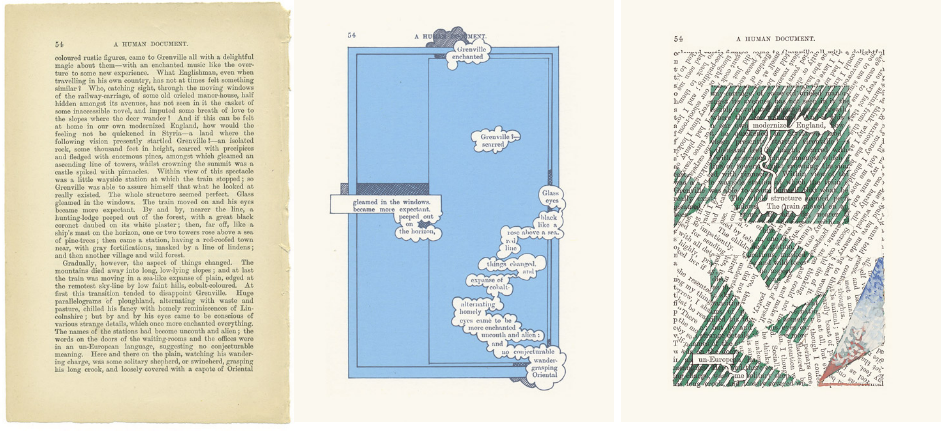
Certaines pages jouent justement avec la matière, la résistance de l’ouvrage original, allant l’entailler par endroit, la brûler ou la noyer.
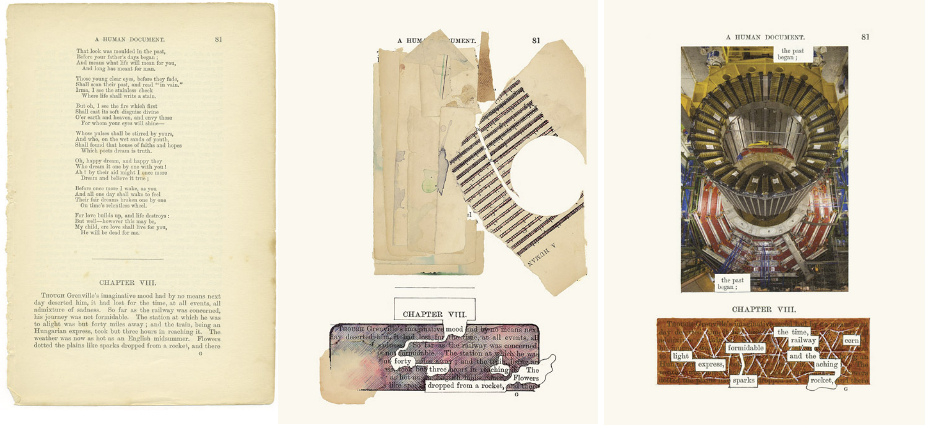
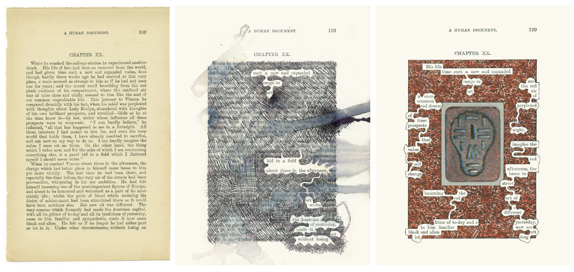
« [L]ivre altéré » ( Citation: Gervais, 2016 Gervais, B. (2016). Imaginaire de la fin du livre : figures du livre et pratiques illittéraires. LHT Fabula. Retrieved from http://www.fabula.org/lht/16/gervais.html ) , le projet de Phillips n’est pas un cut-ups, il n’atteint pas directement la matière de la première écriture, il vient y superposer une nouvelle par jeu d’épaisseur de matière (la première écriture n’est pas retravaillée de quelque manière que ce soit, grattage de la surface ou bains pour ôter l’encre comme pour la pratique du palimpseste) en se basant sur la disparition progressive sous une texture couvrante, plus épaisse : ainsi les premières éditions montrent beaucoup de pages en travail de reformatage, avec le schéma de compositions graphiques à venir, l’architecture d’un recouvrement futur.
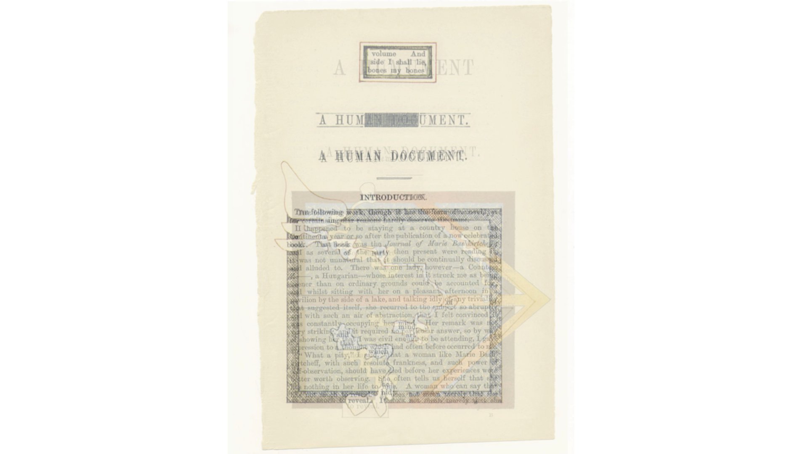
In a palimpsest, the original bleeds through, interweaves its presence with the new materials to a greater or lesser degree. In a transformed work the presence of the original can be reduced to almost nil, or be so fragmented and restructured as to be a Frankenstein monster of the original. ( Citation: Drucker, 2004, p. 109 Drucker, J. (2004). The Century Of Artists’ Books (2nd Revised ed. edition). Granary Books. )
Dans un palimpseste, l’original est visible en profondeur, il entrelace sa présence avec le nouveau matériau de façon plus ou moins importante. Dans une œuvre transformée, la présence de l’original peut être réduite à presque rien, ou être tellement fragmentée et restructurée qu’elle devient un « monstre Frankenstein » de l’original. (traduction personnelle)
Plus proche du petimento (recouvrement d’un tableau pour modifier la profondeur de la toile), la création fait de la trace écrite un support pour nouvelle donnée graphique. Pour autant, la sur-inscription n’empêche pas en effet l’objet de demeurer un livre qui ne semble plus vouloir décider de sa nature entre image et texte (on pourrait penser, sans connaître, se trouver devant un roman graphique, soit en face d’un objet qui construit un récit par l’agencement de signes, figuratifs ou narratifs).
Dans l’agencement des matières, l’apparente stratification relève en réalité de la coïncidence dans la mesure où les niveaux de matières ne sont plus distinguables dans les éditions imprimées qui viennent aplatir la réalité de la texture. Alliage et alignement de deux composants en un même corps, les éditions que l’on peut se procurer de A Humument ne peuvent en réalité témoigner de la texture, seule témoin de l’intervention, et peuvent ainsi être à la source de déceptions proches de celle de Gibson : la page ne pèse pas en main, il n’y a ni craquelure des pâtes de peinture ni monstruosité d’un mot qui crierait sous les couches l’étouffant, il n’y a qu’une illusion graphique que produit le recouvrement.
Si la stratification ou la superposition sont deux dispositifs qui gardent isolées, distinguables et en quelque sorte pérennes les couches, la coïncidence fait de la première trace un espace graphique pour la suivante. Réinventée, l’œuvre d’origine de Mallock n’en reste pas moins intègre, rien n’a été ajouté littéralement à la procession du récit, il a juste été ombragé à certains instant de son cortège. La nouvelle histoire de Phillips n’est rien de moins qu’une extraction de l’ancienne, sans être une totale recomposition : l’organisation des pages de A Humument répond à l’ordre des pages du roman de Mallock, et a donc été contingentée malgré toute la liberté et la possible insolence de laisser le dessin s’attaquer à une littérature publiée. L’ordre de la matière contraint le geste de création, ce qui lui permet, paradoxalement, d’exploser dans les interprétations possibles :
I was very into the I Ching under the influence of my friend John Cage, so I thought of [a Humument] as an oracle. The meaning is suspended in each page, so it can be used like the I Ching. I didn’t think of any way it could really happen, until more than 40 years later. ( Citation: Phillips, 2010 Phillips, T. (2010). The app of A Humument. Retrieved from https://www.eyemagazine.com/blog/post/the-app-of-a-humument )
J’étais très attiré par le Yi King, sous l’influence de mon ami John Cage, et j’ai donc considéré [A Humument] comme un oracle. La signification est suspendue à chaque page, de sorte qu’il peut être utilisé comme le Yi King. Je n’ai pensé à aucune façon dont cela pourrait réellement se produire, jusqu’à plus de 40 ans plus tard. (traduction personnelle)
Classique de la culture chinoise, le « livre des mutations » est un ouvrage du Ier millénaire avant l’ère chrétienne qui a servi comme traité de divination, et qui, cité en lien avec le travail de l’artiste plasticien John Cage – un des fondateurs du mouvement Fluxus qui souhaitait supprimer les frontières entre l’art, le principe du vivant et le monde – évoque une composition de l’instant, de la rencontre avec le présent incarné. La co-présence est ainsi épaisse en termes de compositions de signes graphiques, mais également au regard d’une temporalité puisque les rééditions sont autant d’états d’un texte qui rencontre une livrée et destinée graphique au fur et à mesure de son ensevelissement (les versions sont rendues disponibles sur le site de l’auteur).
Inhumation sous le tracé présent, les consonances du titre recouvert avec le terme « humus » sont un écho à cette procédure du recouvrement comme rencontre avec la matière et à un travail de la porosité des signes.
Terreau sensible et plastique, la page se libère des catégories de la raison graphique pour devenir un tableau à partir de mots assimilés par le travail de réédition de Phillips. Le récit humain évolue pour devenir un document composé à partir de l’enracinement du signe dans une recherche graphique (le terme composé humument résume cet embrassement). ( Citation: Mellet, 2023 Mellet, M. (2023). « Mais étaient-ce des signes ? ». Revue Fémur, 7. Retrieved from https://revuefemur.com/index.php/2023/06/10/mais-etaient-ce-des-signes-les-embrassements-graphiques-du-texte-et-de-limage/ )
Le recouvrement constitue un dépassement des catégories pour la prise en compte du geste de création dans une mesure de la plastique, soit des incendies incidences matérielles, des porosités qui viennent atteindre, survoler, empreindre la main et l’outil. Le geste ici dépasse la trace, annule les classes non pas pour disputer un relativisme où tout se vaut, mais où l’expérience de la trace est ce qui guide l’écriture au signe et le signe au trait.
Dans une tentative de mimétique de rééditions par recouvrement, les images des différentes éditions du projet de Phillips, incluant l’édition de référence, ont été saisies pour être quelque peu bouleversées dans l’écriture qui les structure.
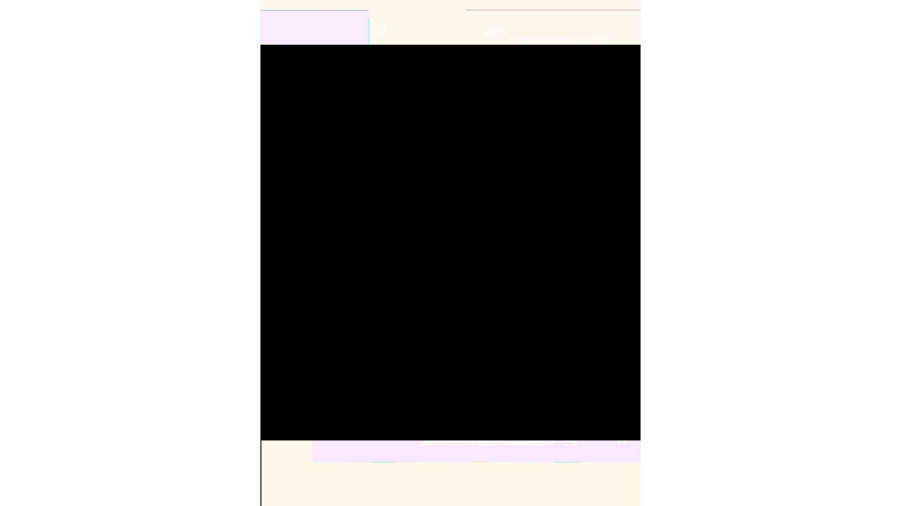
Performe #
faire la rencontre au-devant du moment
la littérature en face se fait
elle n'échappe pas au moment
elle n'échappe pas à la forme ou à la malforme
elle est prise au travers de ce qui la constitue
Développement d’une approche holistique de la poésie ( Citation: Tanasescu, 2022 Tanasescu, C. (2022). Vol. 3, Iss. 1 (#GraphPoem). IDEAH. https://doi.org/10.21428/f1f23564.e6beae69 ) par le traitement automatique du langage naturel (TALN) et la théorie des graphes, le projet #GraphPoem explore le principe de machine littéraire tout en concevant la création issue comme la base pour une réflexion médiatique ( Citation: Tanasescu, 2022 Tanasescu, C. (2022). Vol. 3, Iss. 1 (#GraphPoem). IDEAH. https://doi.org/10.21428/f1f23564.e6beae69 ) et notamment sur la question technique de l’écriture par le principe de performance. À ne pas confondre avec le principe de fabrique même si les deux sont liés par une entreprise de déconstruction, l’effet de la performance n’est pas tant de livrer les modes opératoires et processus qui la constituent en tant que telle « from beyond » ( Citation: Tanasescu, 2022 Tanasescu, C. (2022). Vol. 3, Iss. 1 (#GraphPoem). IDEAH. https://doi.org/10.21428/f1f23564.e6beae69 ) mais plutôt de refaçonner le lieu de l’écriture de la performance (ou le from within).
Parmi les productions du projet #GraphPoem, l’exemple développé par Tanasescu dans son étude ( Citation: 2022 Tanasescu, C. (2022). Vol. 3, Iss. 1 (#GraphPoem). IDEAH. https://doi.org/10.21428/f1f23564.e6beae69 ) permet de saisir toute l’épaisseur d’une poétique qui est autant une prise de position claire qu’une expérimentation toujours actuelle autour de l’écriture. Conçue à l’occasion de la conférence DHSI 2021, la création Brussels du groupe de poésie automatique Margento se définit comme un poème transmédial et hypersonnet futur de type HCI (Human-Computer-Intra-action) composé d’un ensemble de quatorze poèmes, d’un Jupyter Notebook et de quelques scripts en python, d’un repositoy GitHub, d’une note sur la dimension technique et d’une déclaration poétique, de poèmes résultats d’autres calculs, de listes de mots et des listes des arrangements lexicaux.
La création, si elle aurait pu être simplement présentée comme un ensemble de quatorze poèmes, ne doit pas ici se défaire des espaces techniques qui l’accompagnent. Plus que d’allonger une description, ces environnements sont la création en ce que Brussels n’est pas un recueil mais une performance poétique qui embrasse autant la fabrique technique de l’écriture que sa généalogie. Le processus de création décrit par Tanasescu :
While strolling in various communes of Brussels I would stumble upon a place speaking to me in a really particular way (but otherwise hardly noticeable to other passers-by), and that is how the compositional process began. As I let my senses be suddenly, fully, and continuously flooded by the feel and vibe (and noise) of the place, I would put together a list of words in my mind, avalanching in no particular order (what natural language processing or NLP calls a “bag of words”) and with no syntax or poetic form in mind, while also trying to think of, or find online, an existing poem that would go best with that environment and the mood it put me in. In many cases, a relevant poem or poet popped into my mind or was among the Google or various database search results I uncovered afterwards, or I would simply serendipitously come across it much later. This poem would then go in the guiding dataset, while the poem I was working on would continue to evolve. I was being a flaneur around the city, across a database, and along a compositional process at the same time […]. ( Citation: Tanasescu, 2022 Tanasescu, C. (2022). Vol. 3, Iss. 1 (#GraphPoem). IDEAH. https://doi.org/10.21428/f1f23564.e6beae69 )
Au cours de mes promenades dans les différentes communes de Bruxelles, il m’arrivait de tomber sur un lieu qui me parlait d’une manière vraiment particulière (mais qui était à peine perceptible par les autres passants), et c’est ainsi que le processus de composition a commencé. Tout en laissant mes sens être soudainement, pleinement et continuellement inondés par la sensation et l’ambiance (et le bruit) du lieu, je dressais une liste de mots dans mon esprit, en avalanche et sans ordre particulier (ce que le traitement du langage naturel ou NLP appelle un « sac de mots ») et sans syntaxe ou forme poétique à l’esprit, tout en essayant de penser à, ou de trouver en ligne, un poème existant qui irait le mieux avec cet environnement et l’humeur dans laquelle il me mettait. Dans de nombreux cas, un poème ou un poète pertinent m’est venu à l’esprit ou figurait parmi les résultats de recherche de Google ou de diverses bases de données que j’ai découverts par la suite, ou bien j’y suis simplement tombé par hasard bien plus tard. Ce poème était alors intégré à l’ensemble de données de référence, tandis que le poème sur lequel je travaillais continuait d’évoluer. J’étais un flâneur dans la ville, dans une base de données et dans un processus de composition en même temps […]. (traduction personnelle)
Pérégrinations pensantes, le geste de lecture associé à la marche implique une intervention particulière : scraping.
gratter la surface
racler et frotter l'instant
L’expérience de pérégrination pensante est ce qu’essaye de retranscrire le fonctionnement de Brussels.
It actually works as a “mental” AR app popping up before our eyes in the process of translating (scraping and processing) what we see as we walk. Translation or app or both are shaped in the process. While translation generates both the “original” and the “translation,” the AR does not presuppose a constant or self-contained R either. Rather, AR and R search through/with, and thus shape, each other in the process. Poems are picked for guidance in a specific spot, are de/re/trans-formed, or added to the guidance corpus as we go along, while what we scrape, what we (choose) to see is grounded in those poems. ( Citation: Tanasescu, 2022 Tanasescu, C. (2022). #GraphPoem @ DHSI: A Poetics of Network Walks, Stigmergy, and Accident in Performance. IDEAH, 3(1). https://doi.org/10.21428/f1f23564.e6beae69 )
Il s’agit en fait d’une application AR « mentale » qui apparaît sous nos yeux au cours du processus de traduction (scrapement et traitement) de ce que nous voyons pendant que nous marchons. La traduction ou l’application, ou les deux, sont façonnées au cours du processus. Alors que la traduction génère à la fois l’« original » et la « traduction », la RA ne présuppose pas non plus une R constante ou autonome. Au contraire, la RA et la R se recherchent à travers/avec, et donc se façonnent l’une l’autre au cours du processus. Les poèmes sont choisis pour être guidés à un endroit spécifique, sont dé/re/transformés, ou ajoutés au corpus de guidage au fur et à mesure, tandis que ce que nous scrapons, ce que nous (choisissons) de voir est ancré dans ces poèmes. (traduction personnelle)
À partir de cette poétique en marche, le code de Brussels doit produire des poèmes évolutifs au déplacement, soit constituer un réseau de poèmes ou un hypersonnet. Cet objectif est notamment décrit dans la déclaration poétique ou le readme du repository :
Maths. Our code computes (iteratively, where needed) the similarity between the emerging poem’s vector and that of the guidance corpus poem involved in mapping the place we loiter about at the time of “writing.” This computation is in fact part of the composition process, crucially impacting the poem’s form (described, therefore, as vector prosody) and informing the topology and optimal tour across the resulting corpus. It is not only the poetry of place involved that intertwines mapping and touring into a dynamic performative topophrenia (Robert T. Tally’s term). It is also the mathematics of poetic form transitioning from digits to the digital (or rather submerging the former into the latter) that accomplishes that in mapping and crossing vector and “real-life” spaces alike. […] The language and form mutual shaping process involves now a space-modeling mathematics of place exploration-generation. ( Citation: Tanasescu, 2022 Tanasescu, C. (2022). #GraphPoem @ DHSI: A Poetics of Network Walks, Stigmergy, and Accident in Performance. IDEAH, 3(1). https://doi.org/10.21428/f1f23564.e6beae69 )
Les mathématiques. Notre code calcule (itérativement, si nécessaire) la similarité entre le vecteur du poème émergent et celui du poème du corpus d’orientation impliqué dans la cartographie de l’endroit où nous flânons au moment de « l’écriture ». Ce calcul fait en fait partie du processus de composition, ayant un impact crucial sur la forme du poème (décrite, par conséquent, comme une prosodie vectorielle) et informant la topologie et la tournée optimale à travers le corpus résultant. Ce n’est pas seulement la poésie du lieu qui entrelace la cartographie et la tournée dans une topophrénie performative dynamique (terme de Robert T. Tally). C’est aussi la mathématique de la forme poétique passant du numérique au digital (ou plutôt submergeant le premier dans le second) qui accomplit cela en cartographiant et en traversant les espaces vectoriels et « réels ». […] Le processus de façonnage mutuel du langage et de la forme implique maintenant une modélisation de l’espace mathématique de l’exploration et de la génération de lieux. (traduction personnelle)
Conçu en trois étapes (scrapement poétique et physique, hypersonnet entre poèmes et plateformes, performance du poème transmédial), Brussels ne trouvera finalement de fin à son écriture que lors du congrès DHSI lorsque l’hypersonnet est présenté et surtout complété : les mouvements et réitérations de la performance ont « detoured and/or superseded » ( Citation: Tanasescu, 2022 Tanasescu, C. (2022). Vol. 3, Iss. 1 (#GraphPoem). IDEAH. https://doi.org/10.21428/f1f23564.e6beae69 ) les étapes précédentes en constituant une réelle interprétation du poème.
Captation de l'écran du performeur
le curseur a ouvert un nouvel espace de production de poème
le script de l'hypersonnet
le temps passe
la page tarde
le temps passe
scrape le contenu depuis le serveur
le curseur ouvre des fenêtres
à droite, à gauche, en bas, devant
le curseur court de l'une à l'autre
il danse pour ménager l'attente
le temps passe
le script en arrière est un peu oublié
un article s'ouvre
Marco Tulio Ribeiro et al’s. “Beyond Accuracy: Behavioral Testing of NLP Models with CheckList.” ( Citation: 2020 Ribeiro, M., Wu, T., Guestrin, C. & Singh, S. (2020). Beyond Accuracy: Behavioral Testing of NLP Models with CheckList. Association for Computational Linguistics. https://doi.org/10.18653/v1/2020.acl-main.442 )
une piste s'ouvre
basse, batterie
un enregistrement
Hortus Deliciarum de Hildegard von Bingen par Discantus
synthétisations exploratoires
SloMoVo de David (Jhave) Johnston
une application
une application
une application une application une application une application une application une application une application une application une application une application une application une application
bug : 25:52
Sortie du sentier de sa procédure, la promenade en réseaux Brussels a cependant évolué autour d’une forme d’interaction entre humain-machine à partir d’une série d’écritures, ce qui correspond finalement beaucoup aux principes de #GraphPoem.
The various spaces and times that the performance crosses, plots, and/or alternates become therefore instrumental in the context in inscribing and (re)shaping—and thus intermedially (re)performing and rewriting—the poem from scratch. ( Citation: Tanasescu, 2022 Tanasescu, C. (2022). Vol. 3, Iss. 1 (#GraphPoem). IDEAH. https://doi.org/10.21428/f1f23564.e6beae69 )
Les différents espaces et temps que la performance traverse, trace et/ou alterne deviennent donc des instruments dans le contexte de l’inscription et de la (re)mise en forme - et donc de la (re)représentation et de la réécriture intermédiaires - du poème à partir de zéro. (traduction personnelle)
Projet de performance, #GraphPoem pose la question de l’interface médiatique : lieu-performance (« venue-performance ») du commun, l’interface est fondamentalement multiple, engendrant des communautés en tant que performance et action, soit en tant que fabrique de l’évènement et de la création. Dans ce projet, la contribution humaine est entrevue au sens large, ce qui la rend proéminente : par l’écriture, l’exécution du code, l’apport de données, le mouvement du curseur, la recherche de contenu, etc. Cette perfomativité, avec les dysfonctionnements qu’elle peut provoquer, est justement une façon de mieux illustrer les rapports entre matière et sens du point de vue des médias.
Performativity is the element of each action that eludes determination. It is what happens in the instant of action that could not have been foreseen. […] Performativity disturbs norms because it overflows from their determinative power and produces something new, unexpected and therefore, to some degree, subversive. ( Citation: Larrue & Vitali-Rosati, 2019, pp. 49-50 Larrue, J. & Vitali-Rosati, M. (2019). Media do not exist : performativity and mediating conjunctures. Institute of Network Cultures. Retrieved from https://papyrus.bib.umontreal.ca/xmlui/handle/1866/22937 )
La performativité est cet élément de chaque action qui échappe à la détermination. C’est ce qui se passe dans l’instant de l’action et qui n’aurait pas pu être prévu. […] La performativité perturbe les normes parce qu’elle se soustrait à leur pouvoir de détermination et produit quelque chose de nouveau, d’inattendu et donc, dans une certaine mesure, de subversif. (traduction personnelle)
Cette transgression ne signifie cependant pas que la relation est rompue, bien au contraire, puisqu’elle s’établit avec davantage de cohésion et permet de révéler l’entrelacement entre humain et non-humain (« intertwining » ( Citation: Larrue & Vitali-Rosati, 2019, p. 123 Larrue, J. & Vitali-Rosati, M. (2019). Media do not exist : performativity and mediating conjunctures. Institute of Network Cultures. Retrieved from https://papyrus.bib.umontreal.ca/xmlui/handle/1866/22937 ) ) qui amène progressivement à la perspective du détournement.
Détourne #
de la programmation comme production de calligramme
de la génération de texte qui dysfonctionne
de l'encryption dans la confusion des images
de l'utilisation d'un logiciel de montage vidéo comme outil d'édition de texte
Le détournement a été un des axes transversaux des expérimentations tentées tout au long de ce travail. Au-delà de son insolence affirmée, le détournement fait office de désécriture, de recherche des hybridités poreuses entre les traces d’utilisations et la production de signes.
Les artistes de diverses disciplines sont toujours les premiers à découvrir comment permettre à un médium d’utiliser ou de libérer l’énergie d’un autre médium. ( Citation: McLuhan, 1994, p. 75 McLuhan, M. (1994). Understanding media: the extensions of man (1st MIT Press ed). MIT Press. )
Libérer l’énergie d’un autre médium ou rappeler les incidences matérielles des supports, les expérimentations ont souhaité, dans le bricolage de textures non déterminées par une sémantique, extraire un moment de l’inscription, suspendre un geste, pour le laisser être travaillé de l’intérieur par les environnements d’écriture dont les modalités sont explorées avec humilité mais aussi avec irrévérence vis-à-vis de leur but premier. L’hybridation permet selon McLuhan d’adopter une autre posture vis-à-vis du média, d’aller à la rencontre de son étrangeté pour en faire une méthode de compréhension.
je ne peux pas prétendre connaître le fonctionnement des outils utilisés
je ne suis pas avertie des bonnes pratiques
je peux en revanche dire avoir pratiquer leurs dysfonctionnements,
avoir touché les limites de leurs résistances
Recherche de l’interaction ( Citation: McLuhan, 1994, p. 76 McLuhan, M. (1994). Understanding media: the extensions of man (1st MIT Press ed). MIT Press. ) , l’approche non-savante d’un outil confronte à ce qu’il impose dans l’ombre des pratiques habituelles, normées, respectueuses des manuels d’utilisation. L’hybridation, phénomène qui force à un décentrement de l’analyse du contenu vers le contenant, est alors importante parce qu’elle entraîne et implique un processus de discernement. Avec cette hybridation en horizon, le détournement s’enrichit d’une ouverture du paysage des attentes : j’écris en un lieu qui n’était pas pensé pour cela.
je ne respecte rien
je ne lis pas les manuels
je n'indente pas
j'écris mon HTML à la main
je laisse en attente d'enregistrement
je ne tiens pas à jour
je ne suis pas informaticienne
La logique du détournement fait ici écho aux notions de désautomatisation ou étrangisation telles qu’énoncées par Victor Šklovskij ( Citation: 2008 Šklovskij, V. & Gayraud, R. (2008). L’art comme procédé. Éd. Allia. ) qui désigne par ces termes un procédé artistique visant à susciter un sentiment d’étrangeté face à la création, soit à détruire une approche dite automatique. L’exemple donnée par Šklovskij est notamment celui du Cheval de Tolstoï, un récit qui se fonde sur la perspective d’un cheval pour rompre avec les habitudes de la narration littéraire.
Pour implémenter le mattering du fait littéraire dans les cadres d’environnements dont ce n’était pas la destinée, l’écriture « interroge[nt] la technologie d’inscription qui la produit » ( Citation: Hayles, 2002, p. 25 Hayles, N. (2002). Writing Machines. Mediawork. ) à l’instar de technotextes, créations qui « mobilise[nt] des boucles réflexives entre son monde imaginaire et l’artefact matériel qui lui fournit une présence physique » ( Citation: Hayles, 2002, p. 25 Hayles, N. (2002). Writing Machines. Mediawork. ) .
je bricole
je trifouille
je tricote
Les détournements d’encodage du texte des images présents ci-dessus ont été opérés à partir des méthodes de Goldsmith :
Let’s take a .jpg of the famous Droeshout engraving from the title page of the 1623 First Folio edition of Shakespeare’s plays and change the extension from .jpg to .txt. When we open it in a text editor, we’ll see garbled code. Now let’s insert his ninety-third sonnet into it, three times at somewhat equal intervals, and save the file and change the extension back to .jpg. ( Citation: Goldsmith, 2011, p. 22 Goldsmith, K. (2011). Uncreative Writing: Managing Language in the Digital Age. Columbia University Press. )
Prenons un fichier .jpg de la célèbre gravure Droeshout de la page de titre de l’édition First Folio de 1623 des pièces de Shakespeare et changeons l’extension de .jpg en .txt. Si nous l’ouvrons dans un éditeur de texte, nous verrons un code confus. Insérons maintenant son quatre-vingt-treizième sonnet, trois fois à intervalles à peu près égaux, sauvegardons le fichier et changeons l’extension en .jpg.
Ce que montre Goldsmith à la suite est une image de Shakespeare (avant et après le détournement de ses signes) : l’image après est un décalage, fendant le crâne du dramaturge dans la longueur, scalp esthétique, décalage qui semble presque trop contrôlé…
Cette expérience a été reproduite à plusieurs reprises déjà (la bactérie Conan, le roc de Leiris, l’humument), mais, en amont des visuels glitchés produits, s’alterne une longue série d’autres visuels qui sont imontrables. La réalité technique de l’exercice de Goldsmith est aujourd’hui gênée dans la procédure. Parce que les machines modernes sont désormais équipées de CRC (Contrôle de redondance cyclique) qui détectent les erreurs dans les fichiers : la majeure partie des expérimentations ne pouvaient être visualisées
Ce fut notamment le cas pour le détournement de l’image de Le roc dans l’urne dans le cercle vicieux dans le mur raviné par la double ÉCHELLE avec le terme « AMOUR ».
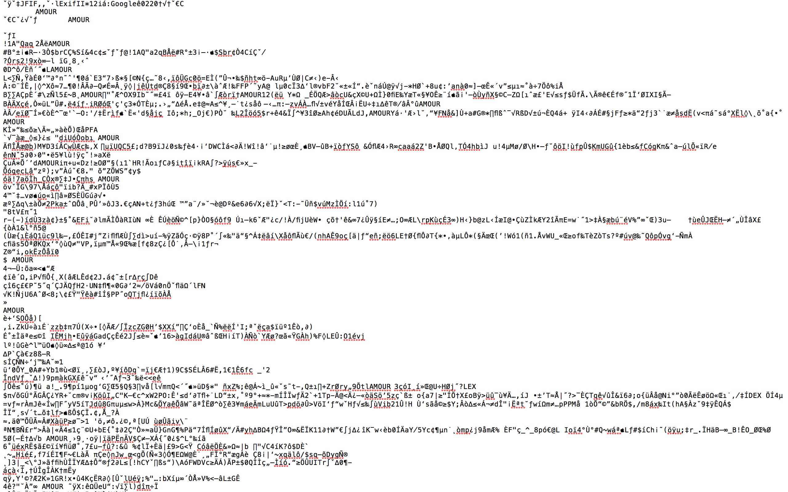
L’AMOUR a été inscrit à de multiples endroits dans le code de l’image d’origine, parsemé pour saturer le poème de sa propre finalité : en toute apparence, l’amour a été trop, a étouffé le poème puisque le logiciel de visualisation de l’image informe qu’il « Could not load image “leiris2.jpg”. Error interpreting image file ». Les détournements produits ne relèvent pas non plus de l’intention : ils sont des bricolages au hasard du résultat de bouleversement des pixels.
Dans le détournement, l’épreuve des limites peut mener à l’échec, le trou dans la page qui comme la maladie dans l’éternel retour de Nietzsche est une occasion de saisir le moment présent. Le trouble n’en reste pas moins un rapport aux incidences matérielles, à la mortalité ou du moins à l’affectuosité de ce que l’on pense comme désincarné, étranger, mystérieux au point de ne pouvoir être impacté par nos mains. Le bruit créé, l’insecte qui grouille dans l’écriture, est un indicateur de ce qui a lieu, qui dépasse largement l’intentionnalité (déjà quelque peu abandonnée dans la démarche d’expérimentation). De cet ensemble de gestes, des confrontations des gestes d’écritures par l’incidence de la matière, il ne peut cependant rester que des archives, des reconstitutions qui sont malgré tout incapables de témoigner de l’épaisseur du geste dans lequel nous sommes portés. Si tout revient au final à des implications matérielles, éclaboussures du réel sur nos mondes, la restitution de cet état de fait ne peut qu’être une essentialisation, un verbiage, de ce que ce fait est de fait.
La matière plate #
La question de la mattering du fait littéraire
qui de la matière ou du sens
parvient le premier à la ligne de l'entendement ?
la matière est-elle cette force de la tortue qui progresse lentement mais continuellement ?
le sens est-il ce mouvement aux larges oreilles qui une fois s'assoupit à l'ombre d'une page ?
est en fait, comme de nombreux a priori des sciences humaines, une question mal posée. Il n’y a pas le fait littéraire et les matières littéraires de chaque côté d’un mur : il n’y a rencontre, une confrontation, une implémentation dans le réel qui fait émerger le fait littéraire en tant qu’un réseau de discours incarnés, entaillés dans un contexte concret qui n’est pas distinguable. L’intentionnalité de l’individu est dans cette équation une projection, celle d’un geste ou d’une pratique de discours qui ne peuvent en réalité pas se soustraire à l’environnement.
le sujet est dans l'objet
son intention dans l'incidence
la lance dans le mouvement du bois
Les déclinaisons de la matière de l’écriture et du geste d’inscription conduisent à un aveu, déjà appréhendé lors de l’introduction de la recherche, mais qui n’en est moins la marque de l’argumentaire déployé.
discours et restitutions
rhétoriques et illusions
toujours écrasent
l'épaisseur et la densité
la relation et l'incidence
même celle de l'écriture
dont ils déroulent le geste
Rempart à l’idéalité et l’abstraction du fait littéraire, la matière a été cette tentative pour ramener le bruit d’une désécriture, le trouble, « the froth from which artistic effects emerge » ( Citation: Hayles, 2002, p. 94 Hayles, N. (2002). Writing Machines. Mediawork. ) / « l’écume d’où émergent les effets artistiques ».
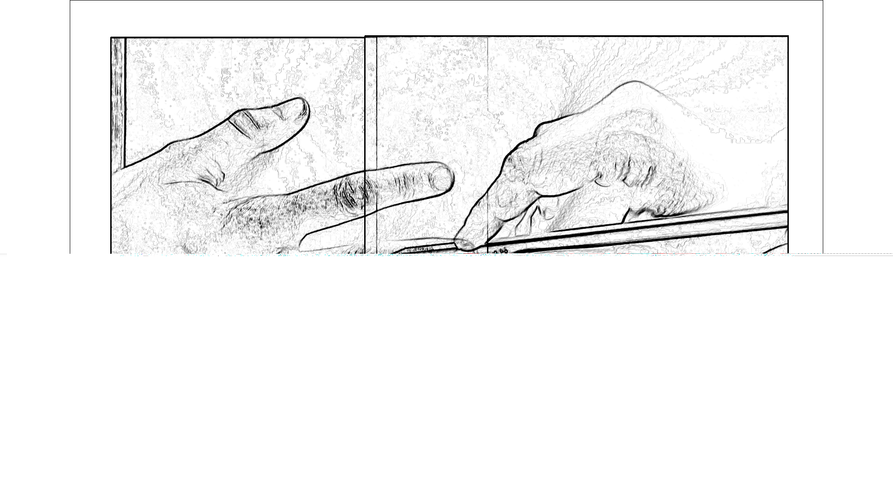
Si sur la matière de l’écriture, il ne peut y avoir que des restitutions a posteriori qui, ce faisant, s’écartent de ce qu’est l’écriture, qui la désécrivent.
-
Question posée par Julien Shuh lors de la présentation « Une recherche-création d’épaisseur » au colloque du CRIHN (Montréal, 11-13 octobre 2023). ↩︎
-
Méthode issue de l’Encyclopédie Diderot et d’Alembert (1751). ↩︎
-
Elle fut découverte en 1956 par le chercheur A.W. Anderson lors d’expériences réalisées pour déterminer si les boîtes de conserve corned-beef pouvaient être stérilisées en les soumettant à une forte dose de rayons gamma. Cette méthode supposée tuer toute les forme de vie laissa cependant indemnes les colonies de Deinococcus radiodurans ↩︎
-
« My aspiration is to articulate a vibrant materiality that runs alongside and inside humans to see how analyses of political events might change if we gave the force of things more due » ( Citation: Bennett, 2010, p. 9 Bennett, J. (2010). Vibrant Matter: a Political Ecology of Things. Duke University Press. ) . ↩︎
-
L’une des différences importantes cependant entre Bennett et Barad est que la première ancre le principe de vitalité de la matière dans la distinction entre vivant et non-vivant, tandis que la deuxième le définit comme ce qui est à l’origine de ces différences d’état. ↩︎
-
À propos de la matière : « is […] doing » ( Citation: Barad, 2007, p. 151 Barad, K. (2007). Meeting the Universe Halfway: Quantum Physics and the Entanglement of Matter and Meaning. Duke University Press. ) . ↩︎
-
« how it moves » ( Citation: Nail, 2019 Nail, T. (2019). Being and motion. Oxford University Press. ) ou « what it does » ( Citation: Gamble, Hanan & al., 2019, p. 112 Gamble, C., Hanan, J. & Nail, T. (2019). What is New Materialism?. Angelaki-journal of The Theoretical Humanities, 24(6). 111–134. https://doi.org/10.1080/0969725X.2019.1684704 ) . ↩︎
-
Thing-power est défini comme « the curious ability of inanimate things to animate, to act, to produce effects dramatic and subtle » ( Citation: Bennett, 2010, p. 6 Bennett, J. (2010). Vibrant Matter: a Political Ecology of Things. Duke University Press. ) . ↩︎